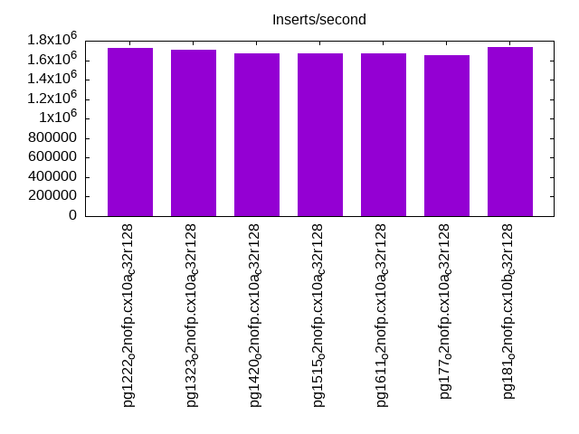
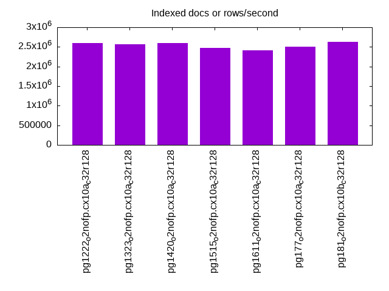
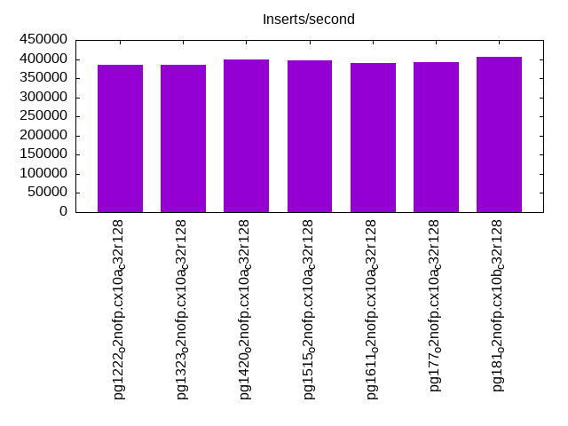
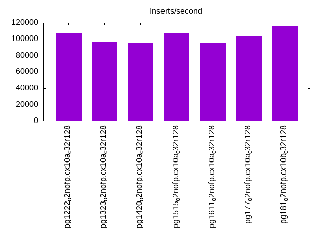
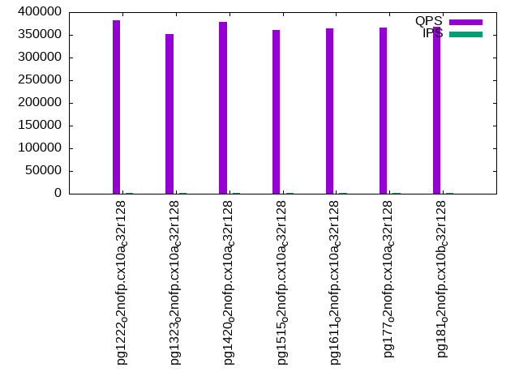
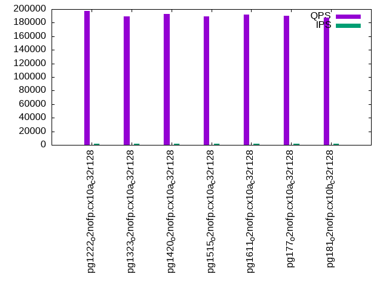
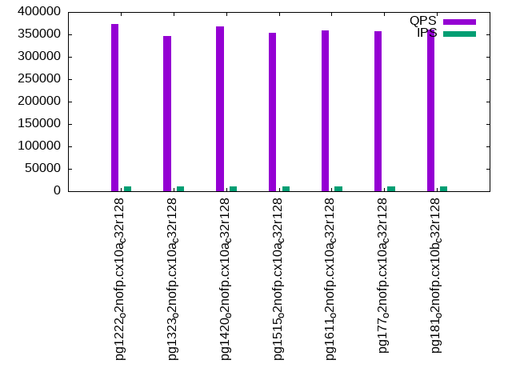
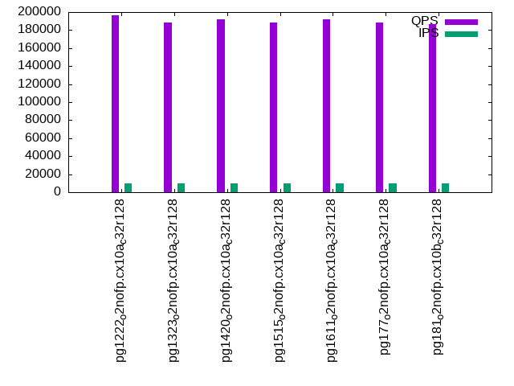
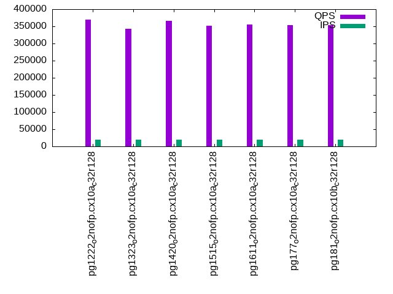
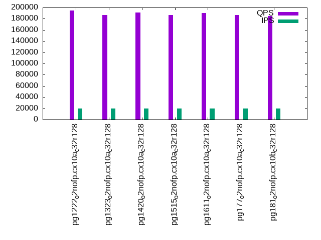

This is a report for the insert benchmark with 200M docs and 20 client(s). It is generated by scripts (bash, awk, sed) and Tufte might not be impressed. An overview of the insert benchmark is here and a short update is here. Below, by DBMS, I mean DBMS+version.config. An example is my8020.c10b40 where my means MySQL, 8020 is version 8.0.20 and c10b40 is the name for the configuration file.
The test server has 48 cores, 128G RAM and 2 NVMe devices setup with SW RAID. The benchmark was run with 20 clients and there were 1 or 3 connections per client (1 for queries or inserts without rate limits, 1+1 for rate limited inserts+deletes). It uses 12 tables with a table per client. It loads 10M rows per table without secondary indexes, creates 3 secondary indexes per table, then inserts 40m+10m rows per table with a delete per insert to avoid growing the table. It then does 6 read+write tests for 3600s each that do queries as fast as possible with 100,100,500,500,1000,1000 inserts/s and the same for deletes/s per client concurrent with the queries. The database is cached. Clients and the DBMS share one server.
The tested DBMS are:
The numbers are inserts/s for l.i0, l.i1 and l.i2, indexed docs (or rows) /s for l.x and queries/s for qr100, qp100 thru qr1000, qp1000" The values are the average rate over the entire test for inserts (IPS) and queries (QPS). The range of values for IPS and QPS is split into 3 parts: bottom 25%, middle 50%, top 25%. Values in the bottom 25% have a red background, values in the top 25% have a green background and values in the middle have no color. A gray background is used for values that can be ignored because the DBMS did not sustain the target insert rate. Red backgrounds are not used when the minimum value is within 80% of the max value.
| dbms | l.i0 | l.x | l.i1 | l.i2 | qr100 | qp100 | qr500 | qp500 | qr1000 | qp1000 |
|---|---|---|---|---|---|---|---|---|---|---|
| pg1222_o2nofp.cx10a_c32r128 | 1724138 | 2597404 | 384615 | 106838 | 381257 | 197134 | 373679 | 196399 | 368957 | 194906 |
| pg1323_o2nofp.cx10a_c32r128 | 1709402 | 2564104 | 384615 | 96946 | 352616 | 189507 | 346789 | 188208 | 342124 | 186676 |
| pg1420_o2nofp.cx10a_c32r128 | 1666667 | 2597404 | 398605 | 95238 | 378340 | 192993 | 368460 | 191950 | 366756 | 190800 |
| pg1515_o2nofp.cx10a_c32r128 | 1666667 | 2469137 | 395648 | 107066 | 360188 | 189561 | 353318 | 188414 | 351054 | 186865 |
| pg1611_o2nofp.cx10a_c32r128 | 1666667 | 2409640 | 389484 | 95831 | 363641 | 192349 | 358226 | 191676 | 354700 | 190167 |
| pg177_o2nofp.cx10a_c32r128 | 1652892 | 2500001 | 391965 | 103413 | 365850 | 190048 | 357294 | 188399 | 354246 | 186922 |
| pg181_o2nofp.cx10b_c32r128 | 1739130 | 2631580 | 406091 | 115741 | 367323 | 187489 | 360974 | 186654 | 353185 | 184865 |
This table has relative throughput, throughput for the DBMS relative to the DBMS in the first line, using the absolute throughput from the previous table. Values less than 0.95 have a yellow background. Values greater than 1.05 have a blue background.
| dbms | l.i0 | l.x | l.i1 | l.i2 | qr100 | qp100 | qr500 | qp500 | qr1000 | qp1000 |
|---|---|---|---|---|---|---|---|---|---|---|
| pg1222_o2nofp.cx10a_c32r128 | 1.00 | 1.00 | 1.00 | 1.00 | 1.00 | 1.00 | 1.00 | 1.00 | 1.00 | 1.00 |
| pg1323_o2nofp.cx10a_c32r128 | 0.99 | 0.99 | 1.00 | 0.91 | 0.92 | 0.96 | 0.93 | 0.96 | 0.93 | 0.96 |
| pg1420_o2nofp.cx10a_c32r128 | 0.97 | 1.00 | 1.04 | 0.89 | 0.99 | 0.98 | 0.99 | 0.98 | 0.99 | 0.98 |
| pg1515_o2nofp.cx10a_c32r128 | 0.97 | 0.95 | 1.03 | 1.00 | 0.94 | 0.96 | 0.95 | 0.96 | 0.95 | 0.96 |
| pg1611_o2nofp.cx10a_c32r128 | 0.97 | 0.93 | 1.01 | 0.90 | 0.95 | 0.98 | 0.96 | 0.98 | 0.96 | 0.98 |
| pg177_o2nofp.cx10a_c32r128 | 0.96 | 0.96 | 1.02 | 0.97 | 0.96 | 0.96 | 0.96 | 0.96 | 0.96 | 0.96 |
| pg181_o2nofp.cx10b_c32r128 | 1.01 | 1.01 | 1.06 | 1.08 | 0.96 | 0.95 | 0.97 | 0.95 | 0.96 | 0.95 |
This lists the average rate of inserts/s for the tests that do inserts concurrent with queries. For such tests the query rate is listed in the table above. The read+write tests are setup so that the insert rate should match the target rate every second. Cells that are not at least 95% of the target have a red background to indicate a failure to satisfy the target.
| dbms | qr100.L1 | qp100.L2 | qr500.L3 | qp500.L4 | qr1000.L5 | qp1000.L6 |
|---|---|---|---|---|---|---|
| pg1222_o2nofp.cx10a_c32r128 | 1987 | 1988 | 9939 | 9936 | 19868 | 19868 |
| pg1323_o2nofp.cx10a_c32r128 | 1987 | 1987 | 9936 | 9936 | 19868 | 19868 |
| pg1420_o2nofp.cx10a_c32r128 | 1987 | 1988 | 9939 | 9936 | 19868 | 19868 |
| pg1515_o2nofp.cx10a_c32r128 | 1988 | 1988 | 9936 | 9936 | 19873 | 19873 |
| pg1611_o2nofp.cx10a_c32r128 | 1987 | 1987 | 9936 | 9936 | 19868 | 19868 |
| pg177_o2nofp.cx10a_c32r128 | 1987 | 1987 | 9934 | 9936 | 19868 | 19868 |
| pg181_o2nofp.cx10b_c32r128 | 1987 | 1987 | 9934 | 9936 | 19868 | 19868 |
| target | 2000 | 2000 | 10000 | 10000 | 20000 | 20000 |
l.i0: load without secondary indexes. Graphs for performance per 1-second interval are here.
Average throughput:
Insert response time histogram: each cell has the percentage of responses that take <= the time in the header and max is the max response time in seconds. For the max column values in the top 25% of the range have a red background and in the bottom 25% of the range have a green background. The red background is not used when the min value is within 80% of the max value.
| dbms | 256us | 1ms | 4ms | 16ms | 64ms | 256ms | 1s | 4s | 16s | gt | max |
|---|---|---|---|---|---|---|---|---|---|---|---|
| pg1222_o2nofp.cx10a_c32r128 | 96.059 | 3.897 | 0.020 | 0.004 | 0.018 | 0.002 | 0.389 | ||||
| pg1323_o2nofp.cx10a_c32r128 | 94.636 | 5.326 | 0.016 | 0.002 | 0.018 | 0.002 | 0.462 | ||||
| pg1420_o2nofp.cx10a_c32r128 | 92.085 | 7.874 | 0.015 | 0.009 | 0.013 | 0.004 | 0.527 | ||||
| pg1515_o2nofp.cx10a_c32r128 | 93.852 | 6.111 | 0.019 | 0.001 | 0.008 | 0.009 | 0.842 | ||||
| pg1611_o2nofp.cx10a_c32r128 | 93.267 | 6.702 | 0.012 | 0.001 | 0.011 | 0.007 | 0.755 | ||||
| pg177_o2nofp.cx10a_c32r128 | 92.862 | 7.083 | 0.037 | 0.002 | 0.007 | 0.009 | 0.999 | ||||
| pg181_o2nofp.cx10b_c32r128 | 95.800 | 4.161 | 0.015 | 0.005 | 0.012 | 0.007 | 0.412 |
Performance metrics for the DBMS listed above. Some are normalized by throughput, others are not. Legend for results is here.
ips qps rps rmbps wps wmbps rpq rkbpq wpi wkbpi csps cpups cspq cpupq dbgb1 dbgb2 rss maxop p50 p99 tag 1724138 0 3 0.0 6888.2 725.1 0.000 0.000 0.004 0.431 242515 47.0 0.141 13 19.1 51.6 1.8 0.389 115577 58892 pg1222_o2nofp.cx10a_c32r128 1709402 0 4 0.0 6935.8 729.3 0.000 0.000 0.004 0.437 261605 47.0 0.153 13 19.1 51.7 1.9 0.462 113403 53643 pg1323_o2nofp.cx10a_c32r128 1666667 0 1 0.0 6673.1 703.9 0.000 0.000 0.004 0.432 281636 46.1 0.169 13 19.1 51.7 6.5 0.527 110681 52559 pg1420_o2nofp.cx10a_c32r128 1666667 0 3 0.0 6672.6 703.9 0.000 0.000 0.004 0.432 257177 45.6 0.154 13 19.1 51.7 1.9 0.842 112466 48246 pg1515_o2nofp.cx10a_c32r128 1666667 0 4 0.0 6620.4 701.9 0.000 0.000 0.004 0.431 265641 45.7 0.159 13 19.1 51.7 3.1 0.755 111080 34363 pg1611_o2nofp.cx10a_c32r128 1652892 0 4 0.0 6617.2 705.5 0.000 0.000 0.004 0.437 281310 45.2 0.170 13 19.1 51.7 0.5 0.999 110881 19479 pg177_o2nofp.cx10a_c32r128 1739130 0 4 0.0 6939.6 732.0 0.000 0.000 0.004 0.431 263133 46.5 0.151 13 19.1 51.7 0.4 0.412 116175 55241 pg181_o2nofp.cx10b_c32r128
Average values from iostat.
r/s rkB/s rrqm/s %rrqm r_await rareq-s w/s wkB/s wrqm/s %wrqm w_await wareq-s d/s dkB/s drqm/s %drqm d_await dareq-s f/s f_await aqu-sz %util 0.113 0.452 0.000 0.000 0.048 0.522 6001.2 742599 904.2 12.28 1.607 122.7 0.000 0.000 0.000 0.000 0.000 0.000 0.000 0.000 10.88 55.24 pg1222_o2nofp.cx10a_c32r128 0.130 1.322 0.000 0.000 0.041 3.217 6038.9 746911 913.9 12.41 2.269 122.7 0.000 0.000 0.000 0.000 0.000 0.000 0.000 0.000 16.56 56.42 pg1323_o2nofp.cx10a_c32r128 0.325 1.633 0.000 0.000 0.076 2.778 5856.7 720815 833.3 11.77 1.702 122.2 0.000 0.000 0.000 0.000 0.000 0.000 0.000 0.000 11.55 60.38 pg1420_o2nofp.cx10a_c32r128 0.175 0.767 0.000 0.000 0.158 1.333 5829.5 720856 855.2 12.03 2.357 122.6 0.000 0.000 0.000 0.000 0.000 0.000 0.000 0.000 16.65 58.64 pg1515_o2nofp.cx10a_c32r128 0.758 3.467 0.108 3.869 0.177 3.833 5819.7 718777 816.8 11.54 1.520 122.7 0.000 0.000 0.000 0.000 0.000 0.000 0.000 0.000 9.813 59.09 pg1611_o2nofp.cx10a_c32r128 0.892 7.800 1.000 3.906 0.231 5.271 5824.6 722543 808.4 11.64 1.905 123.1 0.000 0.000 0.000 0.000 0.000 0.000 0.000 0.000 11.45 58.12 pg177_o2nofp.cx10a_c32r128 0.217 0.904 0.000 0.000 0.110 1.101 6043.3 748679 901.7 12.17 2.471 123.0 0.000 0.000 0.000 0.000 0.000 0.000 0.000 0.000 17.01 57.43 pg181_o2nofp.cx10b_c32r128
l.x: create secondary indexes.
Average throughput:
Performance metrics for the DBMS listed above. Some are normalized by throughput, others are not. Legend for results is here.
ips qps rps rmbps wps wmbps rpq rkbpq wpi wkbpi csps cpups cspq cpupq dbgb1 dbgb2 rss maxop p50 p99 tag 2597404 0 4 0.0 6350.2 730.8 0.000 0.000 0.002 0.288 104583 17.6 0.040 3 38.4 88.5 6.9 0.042 NA NA pg1222_o2nofp.cx10a_c32r128 2564104 0 4 0.0 6169.0 711.9 0.000 0.000 0.002 0.284 96915 16.9 0.038 3 38.4 88.6 6.9 0.037 NA NA pg1323_o2nofp.cx10a_c32r128 2597404 0 2 0.0 6299.9 726.1 0.000 0.000 0.002 0.286 101631 17.6 0.039 3 38.4 88.6 6.9 0.028 NA NA pg1420_o2nofp.cx10a_c32r128 2469137 0 4 0.0 6057.1 699.2 0.000 0.000 0.002 0.290 100757 15.8 0.041 3 38.4 88.6 6.9 0.048 NA NA pg1515_o2nofp.cx10a_c32r128 2409640 0 4 0.0 5785.4 667.8 0.000 0.000 0.002 0.284 101620 15.9 0.042 3 38.4 88.6 6.9 0.032 NA NA pg1611_o2nofp.cx10a_c32r128 2500001 0 137 7.6 6314.4 731.1 0.000 0.003 0.003 0.299 40160 15.2 0.016 3 38.4 88.5 7.2 0.038 NA NA pg177_o2nofp.cx10a_c32r128 2631580 0 4 0.0 6928.7 804.6 0.000 0.000 0.003 0.313 42080 15.6 0.016 3 38.4 88.5 7.2 0.037 NA NA pg181_o2nofp.cx10b_c32r128
Average values from iostat.
r/s rkB/s rrqm/s %rrqm r_await rareq-s w/s wkB/s wrqm/s %wrqm w_await wareq-s d/s dkB/s drqm/s %drqm d_await dareq-s f/s f_await aqu-sz %util 0.160 0.640 0.000 0.000 0.024 0.533 5946.6 748357 419.0 6.723 4.406 125.7 0.000 0.000 0.000 0.000 0.000 0.000 0.000 0.000 28.30 35.64 pg1222_o2nofp.cx10a_c32r128 0.213 1.000 0.000 0.000 0.146 2.250 5790.2 729090 395.1 6.579 5.164 125.8 0.000 0.000 0.000 0.000 0.000 0.000 0.000 0.000 30.37 35.06 pg1323_o2nofp.cx10a_c32r128 0.027 0.107 0.000 0.000 0.067 0.533 5910.5 743621 406.2 6.889 5.073 125.5 0.000 0.000 0.000 0.000 0.000 0.000 0.000 0.000 32.03 35.42 pg1420_o2nofp.cx10a_c32r128 0.987 3.950 0.000 0.000 0.511 3.750 5668.4 714075 388.0 6.594 5.408 125.7 0.000 0.000 0.000 0.000 0.000 0.000 0.000 0.000 32.93 37.95 pg1515_o2nofp.cx10a_c32r128 0.612 2.500 0.000 0.000 0.205 2.333 5429.8 683874 371.1 6.644 7.455 125.9 0.000 0.000 0.000 0.000 0.000 0.000 0.000 0.000 39.47 40.63 pg1611_o2nofp.cx10a_c32r128 36.51 2082.3 0.713 2.509 0.117 10.35 5938.0 748672 389.8 10.33 4.952 118.7 0.000 0.000 0.000 0.000 0.000 0.000 0.000 0.000 51.63 46.99 pg177_o2nofp.cx10a_c32r128 0.067 0.267 0.000 0.000 0.027 0.267 6527.1 823990 416.8 6.722 5.163 126.0 0.000 0.000 0.000 0.000 0.000 0.000 0.000 0.000 42.36 44.16 pg181_o2nofp.cx10b_c32r128
l.i1: continue load after secondary indexes created with 50 inserts per transaction. Graphs for performance per 1-second interval are here.
Average throughput:
Insert response time histogram: each cell has the percentage of responses that take <= the time in the header and max is the max response time in seconds. For the max column values in the top 25% of the range have a red background and in the bottom 25% of the range have a green background. The red background is not used when the min value is within 80% of the max value.
| dbms | 256us | 1ms | 4ms | 16ms | 64ms | 256ms | 1s | 4s | 16s | gt | max |
|---|---|---|---|---|---|---|---|---|---|---|---|
| pg1222_o2nofp.cx10a_c32r128 | 0.787 | 90.267 | 8.419 | 0.525 | 0.002 | nonzero | 0.295 | ||||
| pg1323_o2nofp.cx10a_c32r128 | 1.134 | 89.955 | 8.479 | 0.430 | 0.002 | nonzero | 0.257 | ||||
| pg1420_o2nofp.cx10a_c32r128 | 1.499 | 90.957 | 7.085 | 0.457 | 0.001 | nonzero | 0.479 | ||||
| pg1515_o2nofp.cx10a_c32r128 | 1.053 | 91.307 | 7.158 | 0.479 | 0.003 | nonzero | 0.562 | ||||
| pg1611_o2nofp.cx10a_c32r128 | 1.733 | 90.489 | 7.318 | 0.458 | 0.002 | nonzero | 0.323 | ||||
| pg177_o2nofp.cx10a_c32r128 | 1.780 | 89.976 | 7.768 | 0.472 | 0.002 | 0.001 | 0.811 | ||||
| pg181_o2nofp.cx10b_c32r128 | 1.788 | 90.473 | 7.262 | 0.472 | 0.003 | 0.001 | nonzero | 1.052 |
Delete response time histogram: each cell has the percentage of responses that take <= the time in the header and max is the max response time in seconds. For the max column values in the top 25% of the range have a red background and in the bottom 25% of the range have a green background. The red background is not used when the min value is within 80% of the max value.
| dbms | 256us | 1ms | 4ms | 16ms | 64ms | 256ms | 1s | 4s | 16s | gt | max |
|---|---|---|---|---|---|---|---|---|---|---|---|
| pg1222_o2nofp.cx10a_c32r128 | 18.524 | 78.049 | 3.172 | 0.254 | 0.002 | nonzero | 0.292 | ||||
| pg1323_o2nofp.cx10a_c32r128 | 15.499 | 80.855 | 3.453 | 0.192 | 0.002 | nonzero | 0.259 | ||||
| pg1420_o2nofp.cx10a_c32r128 | 15.543 | 81.249 | 3.002 | 0.206 | 0.001 | nonzero | 0.478 | ||||
| pg1515_o2nofp.cx10a_c32r128 | 18.633 | 78.321 | 2.840 | 0.204 | 0.002 | nonzero | 0.537 | ||||
| pg1611_o2nofp.cx10a_c32r128 | 15.203 | 80.961 | 3.635 | 0.199 | 0.002 | nonzero | 0.324 | ||||
| pg177_o2nofp.cx10a_c32r128 | 19.193 | 77.380 | 3.217 | 0.208 | 0.002 | 0.001 | 0.809 | ||||
| pg181_o2nofp.cx10b_c32r128 | 19.438 | 77.351 | 3.010 | 0.199 | 0.002 | 0.001 | 0.686 |
Performance metrics for the DBMS listed above. Some are normalized by throughput, others are not. Legend for results is here.
ips qps rps rmbps wps wmbps rpq rkbpq wpi wkbpi csps cpups cspq cpupq dbgb1 dbgb2 rss maxop p50 p99 tag 384615 0 218 4.0 6347.9 584.7 0.001 0.011 0.017 1.557 268340 55.8 0.698 70 60.9 157.0 57.1 0.295 21127 4146 pg1222_o2nofp.cx10a_c32r128 384615 0 292 2.7 6133.3 567.6 0.001 0.007 0.016 1.511 253909 57.2 0.660 71 60.6 156.6 42.0 0.257 21388 4196 pg1323_o2nofp.cx10a_c32r128 398605 0 390 2.3 6157.7 576.4 0.001 0.006 0.015 1.481 291932 56.1 0.732 68 58.4 154.4 42.9 0.479 22775 4245 pg1420_o2nofp.cx10a_c32r128 395648 0 446 2.1 6113.2 573.0 0.001 0.005 0.015 1.483 286858 55.1 0.725 67 58.6 154.6 47.3 0.562 22298 3996 pg1515_o2nofp.cx10a_c32r128 389484 0 260 1.2 5893.6 559.2 0.001 0.003 0.015 1.470 271406 56.2 0.697 69 58.1 154.2 51.7 0.323 21869 3946 pg1611_o2nofp.cx10a_c32r128 391965 0 270 1.2 5950.7 565.0 0.001 0.003 0.015 1.476 252926 53.7 0.645 66 58.2 154.3 14.7 0.811 22725 3646 pg177_o2nofp.cx10a_c32r128 406091 0 25 0.1 6195.3 587.1 0.000 0.000 0.015 1.480 250964 55.3 0.618 65 58.2 154.3 40.5 1.052 23025 3246 pg181_o2nofp.cx10b_c32r128
Average values from iostat.
r/s rkB/s rrqm/s %rrqm r_await rareq-s w/s wkB/s wrqm/s %wrqm w_await wareq-s d/s dkB/s drqm/s %drqm d_await dareq-s f/s f_await aqu-sz %util 101.8 1772.8 0.059 1.295 0.039 3.585 6075.4 599081 357.6 4.997 0.163 98.10 0.000 0.000 0.000 0.000 0.000 0.000 0.000 0.000 1.217 95.75 pg1222_o2nofp.cx10a_c32r128 139.5 1206.2 0.030 0.635 0.061 4.425 5881.3 581331 290.7 4.274 0.193 98.24 0.000 0.000 0.000 0.000 0.000 0.000 0.000 0.000 1.333 95.08 pg1323_o2nofp.cx10a_c32r128 187.5 1054.8 0.024 0.954 0.054 3.774 5968.6 590431 230.7 2.956 0.163 98.77 0.000 0.000 0.000 0.000 0.000 0.000 0.000 0.000 1.182 96.01 pg1420_o2nofp.cx10a_c32r128 216.3 1015.1 0.054 0.747 0.063 3.735 5916.9 586932 235.1 3.061 0.202 99.12 0.000 0.000 0.000 0.000 0.000 0.000 0.000 0.000 1.426 95.63 pg1515_o2nofp.cx10a_c32r128 125.4 568.3 0.017 0.393 0.046 2.709 5709.9 572740 222.0 2.969 0.214 100.3 0.000 0.000 0.000 0.000 0.000 0.000 0.000 0.000 1.429 95.21 pg1611_o2nofp.cx10a_c32r128 126.6 582.2 0.040 0.798 0.034 1.577 5761.3 578672 227.9 2.988 0.278 100.1 0.000 0.000 0.000 0.000 0.000 0.000 0.000 0.000 1.926 93.60 pg177_o2nofp.cx10a_c32r128 11.50 56.03 0.025 0.705 0.044 1.166 5999.6 601368 236.0 2.919 0.192 100.2 0.000 0.000 0.000 0.000 0.000 0.000 0.000 0.000 1.335 95.30 pg181_o2nofp.cx10b_c32r128
l.i2: continue load after secondary indexes created with 5 inserts per transaction. Graphs for performance per 1-second interval are here.
Average throughput:
Insert response time histogram: each cell has the percentage of responses that take <= the time in the header and max is the max response time in seconds. For the max column values in the top 25% of the range have a red background and in the bottom 25% of the range have a green background. The red background is not used when the min value is within 80% of the max value.
| dbms | 256us | 1ms | 4ms | 16ms | 64ms | 256ms | 1s | 4s | 16s | gt | max |
|---|---|---|---|---|---|---|---|---|---|---|---|
| pg1222_o2nofp.cx10a_c32r128 | 86.403 | 12.862 | 0.713 | 0.021 | nonzero | nonzero | 0.118 | ||||
| pg1323_o2nofp.cx10a_c32r128 | 86.259 | 13.141 | 0.587 | 0.013 | nonzero | nonzero | 0.089 | ||||
| pg1420_o2nofp.cx10a_c32r128 | 87.534 | 11.965 | 0.484 | 0.017 | nonzero | nonzero | 0.086 | ||||
| pg1515_o2nofp.cx10a_c32r128 | 83.334 | 15.882 | 0.755 | 0.028 | nonzero | nonzero | 0.091 | ||||
| pg1611_o2nofp.cx10a_c32r128 | 84.667 | 14.786 | 0.532 | 0.015 | nonzero | nonzero | 0.088 | ||||
| pg177_o2nofp.cx10a_c32r128 | 90.919 | 8.875 | 0.198 | 0.009 | nonzero | nonzero | 0.096 | ||||
| pg181_o2nofp.cx10b_c32r128 | 88.676 | 11.052 | 0.256 | 0.016 | nonzero | nonzero | 0.092 |
Delete response time histogram: each cell has the percentage of responses that take <= the time in the header and max is the max response time in seconds. For the max column values in the top 25% of the range have a red background and in the bottom 25% of the range have a green background. The red background is not used when the min value is within 80% of the max value.
| dbms | 256us | 1ms | 4ms | 16ms | 64ms | 256ms | 1s | 4s | 16s | gt | max |
|---|---|---|---|---|---|---|---|---|---|---|---|
| pg1222_o2nofp.cx10a_c32r128 | 3.247 | 57.993 | 38.740 | 0.020 | nonzero | nonzero | 0.118 | ||||
| pg1323_o2nofp.cx10a_c32r128 | 2.051 | 50.409 | 47.527 | 0.013 | nonzero | nonzero | 0.089 | ||||
| pg1420_o2nofp.cx10a_c32r128 | 2.058 | 47.596 | 50.320 | 0.025 | nonzero | nonzero | 0.087 | ||||
| pg1515_o2nofp.cx10a_c32r128 | 1.844 | 56.348 | 41.774 | 0.034 | nonzero | nonzero | 0.091 | ||||
| pg1611_o2nofp.cx10a_c32r128 | 1.557 | 46.737 | 51.685 | 0.020 | nonzero | nonzero | 0.088 | ||||
| pg177_o2nofp.cx10a_c32r128 | 2.349 | 53.044 | 44.559 | 0.048 | nonzero | nonzero | 0.096 | ||||
| pg181_o2nofp.cx10b_c32r128 | 1.902 | 71.647 | 26.384 | 0.067 | 0.001 | nonzero | 0.092 |
Performance metrics for the DBMS listed above. Some are normalized by throughput, others are not. Legend for results is here.
ips qps rps rmbps wps wmbps rpq rkbpq wpi wkbpi csps cpups cspq cpupq dbgb1 dbgb2 rss maxop p50 p99 tag 106838 0 0 0.0 1697.8 157.8 0.000 0.000 0.016 1.512 400778 57.2 3.751 257 60.1 156.2 25.9 0.118 4385 2576 pg1222_o2nofp.cx10a_c32r128 96946 0 2 0.0 1485.6 135.8 0.000 0.000 0.015 1.435 375633 55.8 3.875 276 59.9 156.0 31.3 0.089 3910 2478 pg1323_o2nofp.cx10a_c32r128 95238 0 5 0.4 1433.6 132.5 0.000 0.004 0.015 1.425 388817 54.0 4.083 272 57.9 154.0 24.0 0.086 4485 3277 pg1420_o2nofp.cx10a_c32r128 107066 0 2 0.0 1601.0 148.4 0.000 0.000 0.015 1.419 417590 56.7 3.900 254 58.0 154.0 29.5 0.091 4700 3323 pg1515_o2nofp.cx10a_c32r128 95831 0 1 0.0 1421.8 132.4 0.000 0.000 0.015 1.414 387079 54.9 4.039 275 57.6 153.7 34.0 0.088 3916 2892 pg1611_o2nofp.cx10a_c32r128 103413 0 0 0.0 1550.3 143.9 0.000 0.000 0.015 1.425 389472 54.6 3.766 253 57.8 153.8 27.2 0.096 4860 3626 pg177_o2nofp.cx10a_c32r128 115741 0 7 0.3 1919.1 178.6 0.000 0.003 0.017 1.580 422970 57.1 3.654 237 57.6 153.7 40.3 0.092 5386 2473 pg181_o2nofp.cx10b_c32r128
Average values from iostat.
r/s rkB/s rrqm/s %rrqm r_await rareq-s w/s wkB/s wrqm/s %wrqm w_await wareq-s d/s dkB/s drqm/s %drqm d_await dareq-s f/s f_await aqu-sz %util 0.070 1.155 0.047 0.202 0.012 1.782 1661.2 161657 57.10 3.069 0.071 97.70 0.000 0.000 0.000 0.000 0.000 0.000 0.000 0.000 0.119 43.30 pg1222_o2nofp.cx10a_c32r128 0.466 6.652 0.183 0.205 0.038 6.207 1447.0 139192 63.08 4.124 0.070 97.03 0.000 0.000 0.000 0.000 0.000 0.000 0.000 0.000 0.098 39.25 pg1323_o2nofp.cx10a_c32r128 0.484 13.07 0.145 0.907 0.033 4.915 1403.6 135818 56.70 3.345 0.074 97.74 0.000 0.000 0.000 0.000 0.000 0.000 0.000 0.000 0.109 37.16 pg1420_o2nofp.cx10a_c32r128 0.430 4.738 0.204 0.565 0.028 3.795 1567.1 152025 53.36 2.625 0.070 97.51 0.000 0.000 0.000 0.000 0.000 0.000 0.000 0.000 0.116 40.52 pg1515_o2nofp.cx10a_c32r128 0.182 2.179 0.001 0.109 0.024 2.810 1393.8 135612 46.69 2.485 0.069 98.58 0.000 0.000 0.000 0.000 0.000 0.000 0.000 0.000 0.097 37.06 pg1611_o2nofp.cx10a_c32r128 0.217 1.809 0.000 0.000 0.021 1.809 1519.8 147424 49.77 2.396 0.071 98.00 0.000 0.000 0.000 0.000 0.000 0.000 0.000 0.000 0.109 39.39 pg177_o2nofp.cx10a_c32r128 1.624 37.95 0.024 0.068 0.034 3.943 1882.6 182941 57.88 2.231 0.081 98.37 0.000 0.000 0.000 0.000 0.000 0.000 0.000 0.000 0.158 45.11 pg181_o2nofp.cx10b_c32r128
qr100.L1: range queries with 100 insert/s per client. Graphs for performance per 1-second interval are here.
Average throughput:
Query response time histogram: each cell has the percentage of responses that take <= the time in the header and max is the max response time in seconds. For max values in the top 25% of the range have a red background and in the bottom 25% of the range have a green background. The red background is not used when the min value is within 80% of the max value.
| dbms | 256us | 1ms | 4ms | 16ms | 64ms | 256ms | 1s | 4s | 16s | gt | max |
|---|---|---|---|---|---|---|---|---|---|---|---|
| pg1222_o2nofp.cx10a_c32r128 | 99.998 | 0.001 | 0.001 | nonzero | nonzero | 0.043 | |||||
| pg1323_o2nofp.cx10a_c32r128 | 99.998 | 0.001 | 0.001 | nonzero | 0.011 | ||||||
| pg1420_o2nofp.cx10a_c32r128 | 99.998 | 0.001 | 0.001 | nonzero | 0.012 | ||||||
| pg1515_o2nofp.cx10a_c32r128 | 99.998 | 0.001 | 0.001 | nonzero | 0.008 | ||||||
| pg1611_o2nofp.cx10a_c32r128 | 99.998 | 0.001 | 0.001 | nonzero | 0.008 | ||||||
| pg177_o2nofp.cx10a_c32r128 | 99.998 | 0.001 | 0.001 | nonzero | 0.008 | ||||||
| pg181_o2nofp.cx10b_c32r128 | 99.998 | 0.001 | 0.001 | nonzero | nonzero | nonzero | 0.084 |
Insert response time histogram: each cell has the percentage of responses that take <= the time in the header and max is the max response time in seconds. For max values in the top 25% of the range have a red background and in the bottom 25% of the range have a green background. The red background is not used when the min value is within 80% of the max value.
| dbms | 256us | 1ms | 4ms | 16ms | 64ms | 256ms | 1s | 4s | 16s | gt | max |
|---|---|---|---|---|---|---|---|---|---|---|---|
| pg1222_o2nofp.cx10a_c32r128 | 99.808 | 0.174 | 0.017 | 0.045 | |||||||
| pg1323_o2nofp.cx10a_c32r128 | 99.805 | 0.195 | 0.010 | ||||||||
| pg1420_o2nofp.cx10a_c32r128 | 0.001 | 99.823 | 0.176 | 0.014 | |||||||
| pg1515_o2nofp.cx10a_c32r128 | 99.833 | 0.167 | 0.011 | ||||||||
| pg1611_o2nofp.cx10a_c32r128 | 0.001 | 99.829 | 0.170 | 0.010 | |||||||
| pg177_o2nofp.cx10a_c32r128 | 0.019 | 99.828 | 0.152 | 0.010 | |||||||
| pg181_o2nofp.cx10b_c32r128 | 0.144 | 99.635 | 0.199 | 0.021 | 0.023 |
Delete response time histogram: each cell has the percentage of responses that take <= the time in the header and max is the max response time in seconds. For max values in the top 25% of the range have a red background and in the bottom 25% of the range have a green background. The red background is not used when the min value is within 80% of the max value.
| dbms | 256us | 1ms | 4ms | 16ms | 64ms | 256ms | 1s | 4s | 16s | gt | max |
|---|---|---|---|---|---|---|---|---|---|---|---|
| pg1222_o2nofp.cx10a_c32r128 | 50.335 | 49.621 | 0.032 | 0.013 | 0.045 | ||||||
| pg1323_o2nofp.cx10a_c32r128 | 46.558 | 53.408 | 0.033 | 0.010 | |||||||
| pg1420_o2nofp.cx10a_c32r128 | 41.471 | 58.501 | 0.028 | 0.008 | |||||||
| pg1515_o2nofp.cx10a_c32r128 | 46.689 | 53.295 | 0.016 | 0.006 | |||||||
| pg1611_o2nofp.cx10a_c32r128 | 41.434 | 58.544 | 0.022 | 0.008 | |||||||
| pg177_o2nofp.cx10a_c32r128 | 43.464 | 56.519 | 0.017 | 0.007 | |||||||
| pg181_o2nofp.cx10b_c32r128 | 66.289 | 33.631 | 0.073 | 0.008 | 0.021 |
Performance metrics for the DBMS listed above. Some are normalized by throughput, others are not. Legend for results is here.
ips qps rps rmbps wps wmbps rpq rkbpq wpi wkbpi csps cpups cspq cpupq dbgb1 dbgb2 rss maxop p50 p99 tag 1987 381257 0 0.0 255.9 14.3 0.000 0.000 0.129 7.361 1454336 42.9 3.815 54 60.0 152.1 62.1 0.043 19173 18371 pg1222_o2nofp.cx10a_c32r128 1987 352616 0 0.0 264.1 14.5 0.000 0.000 0.133 7.456 1345170 42.8 3.815 58 59.7 155.8 61.8 0.011 17725 17052 pg1323_o2nofp.cx10a_c32r128 1987 378340 0 0.0 258.7 14.4 0.000 0.000 0.130 7.424 1443298 42.6 3.815 54 57.8 153.9 59.4 0.012 18860 18141 pg1420_o2nofp.cx10a_c32r128 1988 360188 0 0.0 254.3 14.4 0.000 0.000 0.128 7.414 1373572 42.7 3.813 57 57.9 154.0 0.8 0.008 18028 17283 pg1515_o2nofp.cx10a_c32r128 1987 363641 0 0.0 251.5 14.4 0.000 0.000 0.127 7.398 1387050 42.8 3.814 56 57.6 153.7 2.6 0.008 18476 17721 pg1611_o2nofp.cx10a_c32r128 1987 365850 0 0.0 250.1 14.4 0.000 0.000 0.126 7.398 1395304 42.9 3.814 56 57.8 153.8 59.4 0.008 18444 17635 pg177_o2nofp.cx10a_c32r128 1987 367323 0 0.0 240.9 14.7 0.000 0.000 0.121 7.576 1401102 42.8 3.814 56 57.6 148.3 0.9 0.084 18590 17811 pg181_o2nofp.cx10b_c32r128
Average values from iostat.
r/s rkB/s rrqm/s %rrqm r_await rareq-s w/s wkB/s wrqm/s %wrqm w_await wareq-s d/s dkB/s drqm/s %drqm d_await dareq-s f/s f_await aqu-sz %util 0.067 1.262 0.112 0.165 0.008 1.079 256.9 14680.8 13.42 8.187 0.065 68.49 0.000 0.000 0.000 0.000 0.000 0.000 0.000 0.000 0.013 6.881 pg1222_o2nofp.cx10a_c32r128 0.090 1.002 0.000 0.000 0.019 2.137 265.0 14875.3 15.17 8.689 0.064 67.02 0.000 0.000 0.000 0.000 0.000 0.000 0.000 0.000 0.013 7.068 pg1323_o2nofp.cx10a_c32r128 0.080 0.959 0.006 0.121 0.016 1.997 259.7 14809.9 14.24 8.487 0.064 68.21 0.000 0.000 0.000 0.000 0.000 0.000 0.000 0.000 0.013 6.870 pg1420_o2nofp.cx10a_c32r128 0.083 1.165 0.024 0.095 0.013 1.550 258.3 14782.5 8.548 5.490 0.065 69.05 0.000 0.000 0.000 0.000 0.000 0.000 0.000 0.000 0.013 6.819 pg1515_o2nofp.cx10a_c32r128 0.063 0.564 0.000 0.000 0.009 1.103 255.6 14746.8 8.406 5.415 0.064 69.62 0.000 0.000 0.000 0.000 0.000 0.000 0.000 0.000 0.013 6.703 pg1611_o2nofp.cx10a_c32r128 0.062 0.576 0.002 0.107 0.008 1.027 253.9 14747.6 8.170 5.459 0.066 71.19 0.000 0.000 0.000 0.000 0.000 0.000 0.000 0.000 0.013 6.629 pg177_o2nofp.cx10a_c32r128 0.022 0.308 0.017 0.258 0.004 0.471 244.1 15097.8 8.284 5.421 0.067 73.56 0.000 0.000 0.000 0.000 0.000 0.000 0.000 0.000 0.013 6.439 pg181_o2nofp.cx10b_c32r128
qp100.L2: point queries with 100 insert/s per client. Graphs for performance per 1-second interval are here.
Average throughput:
Query response time histogram: each cell has the percentage of responses that take <= the time in the header and max is the max response time in seconds. For max values in the top 25% of the range have a red background and in the bottom 25% of the range have a green background. The red background is not used when the min value is within 80% of the max value.
| dbms | 256us | 1ms | 4ms | 16ms | 64ms | 256ms | 1s | 4s | 16s | gt | max |
|---|---|---|---|---|---|---|---|---|---|---|---|
| pg1222_o2nofp.cx10a_c32r128 | 99.995 | 0.004 | 0.001 | nonzero | nonzero | 0.020 | |||||
| pg1323_o2nofp.cx10a_c32r128 | 99.994 | 0.005 | 0.001 | nonzero | nonzero | 0.024 | |||||
| pg1420_o2nofp.cx10a_c32r128 | 99.995 | 0.004 | 0.001 | nonzero | nonzero | 0.082 | |||||
| pg1515_o2nofp.cx10a_c32r128 | 99.995 | 0.004 | 0.001 | nonzero | nonzero | 0.018 | |||||
| pg1611_o2nofp.cx10a_c32r128 | 99.995 | 0.004 | 0.001 | nonzero | 0.013 | ||||||
| pg177_o2nofp.cx10a_c32r128 | 99.995 | 0.004 | 0.001 | nonzero | 0.012 | ||||||
| pg181_o2nofp.cx10b_c32r128 | 99.995 | 0.004 | 0.001 | nonzero | nonzero | 0.017 |
Insert response time histogram: each cell has the percentage of responses that take <= the time in the header and max is the max response time in seconds. For max values in the top 25% of the range have a red background and in the bottom 25% of the range have a green background. The red background is not used when the min value is within 80% of the max value.
| dbms | 256us | 1ms | 4ms | 16ms | 64ms | 256ms | 1s | 4s | 16s | gt | max |
|---|---|---|---|---|---|---|---|---|---|---|---|
| pg1222_o2nofp.cx10a_c32r128 | 99.659 | 0.316 | 0.025 | 0.051 | |||||||
| pg1323_o2nofp.cx10a_c32r128 | 99.753 | 0.242 | 0.006 | 0.024 | |||||||
| pg1420_o2nofp.cx10a_c32r128 | 99.709 | 0.291 | 0.009 | ||||||||
| pg1515_o2nofp.cx10a_c32r128 | 99.779 | 0.219 | 0.002 | 0.021 | |||||||
| pg1611_o2nofp.cx10a_c32r128 | 99.790 | 0.210 | 0.015 | ||||||||
| pg177_o2nofp.cx10a_c32r128 | 99.718 | 0.278 | 0.004 | 0.024 | |||||||
| pg181_o2nofp.cx10b_c32r128 | 99.691 | 0.276 | 0.033 | 0.032 |
Delete response time histogram: each cell has the percentage of responses that take <= the time in the header and max is the max response time in seconds. For max values in the top 25% of the range have a red background and in the bottom 25% of the range have a green background. The red background is not used when the min value is within 80% of the max value.
| dbms | 256us | 1ms | 4ms | 16ms | 64ms | 256ms | 1s | 4s | 16s | gt | max |
|---|---|---|---|---|---|---|---|---|---|---|---|
| pg1222_o2nofp.cx10a_c32r128 | 42.325 | 57.517 | 0.145 | 0.013 | 0.051 | ||||||
| pg1323_o2nofp.cx10a_c32r128 | 39.397 | 60.484 | 0.114 | 0.005 | 0.022 | ||||||
| pg1420_o2nofp.cx10a_c32r128 | 38.436 | 61.387 | 0.177 | 0.016 | |||||||
| pg1515_o2nofp.cx10a_c32r128 | 40.301 | 59.607 | 0.089 | 0.003 | 0.019 | ||||||
| pg1611_o2nofp.cx10a_c32r128 | 38.519 | 61.380 | 0.101 | 0.016 | |||||||
| pg177_o2nofp.cx10a_c32r128 | 38.549 | 61.272 | 0.175 | 0.004 | 0.021 | ||||||
| pg181_o2nofp.cx10b_c32r128 | 51.496 | 48.325 | 0.155 | 0.024 | 0.030 |
Performance metrics for the DBMS listed above. Some are normalized by throughput, others are not. Legend for results is here.
ips qps rps rmbps wps wmbps rpq rkbpq wpi wkbpi csps cpups cspq cpupq dbgb1 dbgb2 rss maxop p50 p99 tag 1988 197134 0 0.0 376.7 19.7 0.000 0.000 0.190 10.128 760710 41.7 3.859 102 60.1 139.9 49.4 0.020 9961 9749 pg1222_o2nofp.cx10a_c32r128 1987 189507 1 0.0 373.4 19.6 0.000 0.000 0.188 10.092 731515 41.6 3.860 105 59.8 143.7 38.1 0.024 9561 9350 pg1323_o2nofp.cx10a_c32r128 1988 192993 0 0.0 369.1 19.4 0.000 0.000 0.186 10.002 744755 41.8 3.859 104 57.8 141.5 3.2 0.082 9769 9574 pg1420_o2nofp.cx10a_c32r128 1988 189561 4 0.0 363.0 19.4 0.000 0.000 0.183 9.989 731455 41.5 3.859 105 57.9 141.5 28.8 0.018 9561 9366 pg1515_o2nofp.cx10a_c32r128 1987 192349 0 0.0 360.1 19.3 0.000 0.000 0.181 9.949 742282 41.2 3.859 103 57.6 141.4 33.2 0.013 9701 9510 pg1611_o2nofp.cx10a_c32r128 1987 190048 0 0.0 358.9 19.3 0.000 0.000 0.181 9.940 733280 41.4 3.858 105 57.8 141.4 54.0 0.012 9561 9382 pg177_o2nofp.cx10a_c32r128 1987 187489 0 0.0 387.4 18.1 0.000 0.000 0.195 9.343 723486 41.3 3.859 106 57.6 136.1 0.8 0.017 9526 9318 pg181_o2nofp.cx10b_c32r128
Average values from iostat.
r/s rkB/s rrqm/s %rrqm r_await rareq-s w/s wkB/s wrqm/s %wrqm w_await wareq-s d/s dkB/s drqm/s %drqm d_await dareq-s f/s f_await aqu-sz %util 0.011 0.159 0.001 0.069 0.002 0.311 375.4 20182.4 14.49 4.597 0.054 62.22 0.000 0.000 0.000 0.000 0.000 0.000 0.000 0.000 0.017 9.304 pg1222_o2nofp.cx10a_c32r128 0.079 1.314 0.134 0.207 0.007 0.567 371.6 20106.2 15.00 4.931 0.053 63.30 0.000 0.000 0.000 0.000 0.000 0.000 0.000 0.000 0.017 9.249 pg1323_o2nofp.cx10a_c32r128 0.051 0.621 0.059 0.123 0.008 0.956 367.4 19930.7 14.59 4.644 0.056 63.00 0.000 0.000 0.000 0.000 0.000 0.000 0.000 0.000 0.018 9.048 pg1420_o2nofp.cx10a_c32r128 3.958 15.97 0.000 0.000 0.006 0.639 370.7 19921.8 9.710 3.020 0.056 63.70 22.36 612367 0.004 0.000 0.000 140.7 0.000 0.000 0.020 9.395 pg1515_o2nofp.cx10a_c32r128 0.031 0.346 0.012 0.192 0.006 0.826 361.8 19815.4 9.894 3.062 0.054 63.98 0.000 0.000 0.000 0.000 0.000 0.000 0.000 0.000 0.017 9.010 pg1611_o2nofp.cx10a_c32r128 0.019 0.187 0.002 0.107 0.007 0.549 360.8 19796.0 9.523 3.060 0.056 64.14 0.000 0.000 0.000 0.000 0.000 0.000 0.000 0.000 0.017 8.786 pg177_o2nofp.cx10a_c32r128 0.011 0.101 0.007 0.191 0.002 0.179 389.7 18610.9 9.498 3.254 0.056 58.89 0.000 0.000 0.000 0.000 0.000 0.000 0.000 0.000 0.018 8.389 pg181_o2nofp.cx10b_c32r128
qr500.L3: range queries with 500 insert/s per client. Graphs for performance per 1-second interval are here.
Average throughput:
Query response time histogram: each cell has the percentage of responses that take <= the time in the header and max is the max response time in seconds. For max values in the top 25% of the range have a red background and in the bottom 25% of the range have a green background. The red background is not used when the min value is within 80% of the max value.
| dbms | 256us | 1ms | 4ms | 16ms | 64ms | 256ms | 1s | 4s | 16s | gt | max |
|---|---|---|---|---|---|---|---|---|---|---|---|
| pg1222_o2nofp.cx10a_c32r128 | 99.994 | 0.003 | 0.003 | nonzero | nonzero | 0.036 | |||||
| pg1323_o2nofp.cx10a_c32r128 | 99.994 | 0.003 | 0.003 | nonzero | nonzero | 0.024 | |||||
| pg1420_o2nofp.cx10a_c32r128 | 99.994 | 0.003 | 0.003 | nonzero | nonzero | 0.028 | |||||
| pg1515_o2nofp.cx10a_c32r128 | 99.994 | 0.003 | 0.003 | nonzero | nonzero | 0.020 | |||||
| pg1611_o2nofp.cx10a_c32r128 | 99.994 | 0.003 | 0.003 | nonzero | nonzero | 0.022 | |||||
| pg177_o2nofp.cx10a_c32r128 | 99.994 | 0.003 | 0.003 | nonzero | nonzero | 0.024 | |||||
| pg181_o2nofp.cx10b_c32r128 | 99.995 | 0.003 | 0.002 | nonzero | nonzero | 0.018 |
Insert response time histogram: each cell has the percentage of responses that take <= the time in the header and max is the max response time in seconds. For max values in the top 25% of the range have a red background and in the bottom 25% of the range have a green background. The red background is not used when the min value is within 80% of the max value.
| dbms | 256us | 1ms | 4ms | 16ms | 64ms | 256ms | 1s | 4s | 16s | gt | max |
|---|---|---|---|---|---|---|---|---|---|---|---|
| pg1222_o2nofp.cx10a_c32r128 | 9.475 | 89.944 | 0.563 | 0.017 | 0.049 | ||||||
| pg1323_o2nofp.cx10a_c32r128 | 7.494 | 91.961 | 0.535 | 0.010 | 0.030 | ||||||
| pg1420_o2nofp.cx10a_c32r128 | 6.891 | 92.571 | 0.523 | 0.014 | 0.035 | ||||||
| pg1515_o2nofp.cx10a_c32r128 | 5.533 | 93.936 | 0.524 | 0.006 | 0.030 | ||||||
| pg1611_o2nofp.cx10a_c32r128 | 7.849 | 91.652 | 0.488 | 0.011 | 0.026 | ||||||
| pg177_o2nofp.cx10a_c32r128 | 14.823 | 84.666 | 0.501 | 0.010 | 0.027 | ||||||
| pg181_o2nofp.cx10b_c32r128 | 15.572 | 83.919 | 0.497 | 0.011 | 0.033 |
Delete response time histogram: each cell has the percentage of responses that take <= the time in the header and max is the max response time in seconds. For max values in the top 25% of the range have a red background and in the bottom 25% of the range have a green background. The red background is not used when the min value is within 80% of the max value.
| dbms | 256us | 1ms | 4ms | 16ms | 64ms | 256ms | 1s | 4s | 16s | gt | max |
|---|---|---|---|---|---|---|---|---|---|---|---|
| pg1222_o2nofp.cx10a_c32r128 | 54.019 | 45.687 | 0.284 | 0.010 | 0.040 | ||||||
| pg1323_o2nofp.cx10a_c32r128 | 46.540 | 53.158 | 0.297 | 0.005 | 0.030 | ||||||
| pg1420_o2nofp.cx10a_c32r128 | 41.228 | 58.482 | 0.284 | 0.006 | 0.032 | ||||||
| pg1515_o2nofp.cx10a_c32r128 | 50.263 | 49.500 | 0.235 | 0.002 | 0.023 | ||||||
| pg1611_o2nofp.cx10a_c32r128 | 41.381 | 58.350 | 0.262 | 0.007 | 0.022 | ||||||
| pg177_o2nofp.cx10a_c32r128 | 47.079 | 52.640 | 0.276 | 0.005 | 0.021 | ||||||
| pg181_o2nofp.cx10b_c32r128 | 72.045 | 27.693 | 0.258 | 0.004 | 0.021 |
Performance metrics for the DBMS listed above. Some are normalized by throughput, others are not. Legend for results is here.
ips qps rps rmbps wps wmbps rpq rkbpq wpi wkbpi csps cpups cspq cpupq dbgb1 dbgb2 rss maxop p50 p99 tag 9939 373679 0 0.0 474.4 28.6 0.000 0.000 0.048 2.950 1421488 43.9 3.804 56 60.1 131.4 43.7 0.036 18812 17789 pg1222_o2nofp.cx10a_c32r128 9936 346789 0 0.0 463.5 28.4 0.000 0.000 0.047 2.927 1319537 43.7 3.805 60 59.8 134.4 36.6 0.024 17485 16563 pg1323_o2nofp.cx10a_c32r128 9939 368460 0 0.0 461.8 28.3 0.000 0.000 0.046 2.917 1401824 43.4 3.805 57 57.9 132.2 41.4 0.028 18348 17435 pg1420_o2nofp.cx10a_c32r128 9936 353318 0 0.0 453.9 28.3 0.000 0.000 0.046 2.913 1344411 43.6 3.805 59 57.9 132.3 41.0 0.020 17684 16780 pg1515_o2nofp.cx10a_c32r128 9936 358226 0 0.0 450.9 28.2 0.000 0.000 0.045 2.904 1363028 43.7 3.805 59 57.7 132.1 30.6 0.022 18019 17054 pg1611_o2nofp.cx10a_c32r128 9934 357294 0 0.0 451.8 28.3 0.000 0.000 0.045 2.916 1357596 43.7 3.800 59 57.8 132.2 32.8 0.024 17869 16958 pg177_o2nofp.cx10a_c32r128 9934 360974 0 0.0 418.4 28.8 0.000 0.000 0.042 2.971 1371880 43.7 3.801 58 57.6 128.2 24.9 0.018 18348 17533 pg181_o2nofp.cx10b_c32r128
Average values from iostat.
r/s rkB/s rrqm/s %rrqm r_await rareq-s w/s wkB/s wrqm/s %wrqm w_await wareq-s d/s dkB/s drqm/s %drqm d_await dareq-s f/s f_await aqu-sz %util 0.088 4.544 0.020 0.107 0.004 0.354 470.5 29373.7 18.44 4.665 0.061 64.44 0.000 0.000 0.000 0.000 0.000 0.000 0.000 0.000 0.030 10.62 pg1222_o2nofp.cx10a_c32r128 0.037 0.436 0.001 0.038 0.006 0.772 460.2 29142.3 17.82 4.643 0.058 67.17 0.000 0.000 0.000 0.000 0.000 0.000 0.000 0.000 0.029 10.56 pg1323_o2nofp.cx10a_c32r128 0.032 0.366 0.024 0.111 0.007 0.593 457.9 29045.9 18.47 4.707 0.058 66.71 0.000 0.000 0.000 0.000 0.000 0.000 0.000 0.000 0.029 10.27 pg1420_o2nofp.cx10a_c32r128 0.028 0.269 0.000 0.000 0.006 0.676 453.5 29000.9 16.29 3.900 0.059 67.85 0.000 0.000 0.000 0.000 0.000 0.000 0.000 0.000 0.029 10.05 pg1515_o2nofp.cx10a_c32r128 0.055 0.583 0.024 0.440 0.009 0.770 453.8 29325.1 16.20 3.823 0.082 68.40 0.000 0.000 0.000 0.000 0.000 0.000 0.000 0.000 0.050 10.04 pg1611_o2nofp.cx10a_c32r128 0.080 0.559 0.018 0.131 0.005 0.642 451.0 29010.8 13.55 3.236 0.061 67.95 0.000 0.000 0.000 0.000 0.000 0.000 0.000 0.000 0.031 9.950 pg177_o2nofp.cx10a_c32r128 0.054 0.278 0.000 0.000 0.002 0.240 418.4 29563.8 12.47 3.112 0.065 75.46 0.000 0.000 0.000 0.000 0.000 0.000 0.000 0.000 0.030 10.07 pg181_o2nofp.cx10b_c32r128
qp500.L4: point queries with 500 insert/s per client. Graphs for performance per 1-second interval are here.
Average throughput:
Query response time histogram: each cell has the percentage of responses that take <= the time in the header and max is the max response time in seconds. For max values in the top 25% of the range have a red background and in the bottom 25% of the range have a green background. The red background is not used when the min value is within 80% of the max value.
| dbms | 256us | 1ms | 4ms | 16ms | 64ms | 256ms | 1s | 4s | 16s | gt | max |
|---|---|---|---|---|---|---|---|---|---|---|---|
| pg1222_o2nofp.cx10a_c32r128 | 99.990 | 0.007 | 0.003 | nonzero | nonzero | 0.016 | |||||
| pg1323_o2nofp.cx10a_c32r128 | 99.989 | 0.008 | 0.003 | nonzero | nonzero | 0.019 | |||||
| pg1420_o2nofp.cx10a_c32r128 | 99.989 | 0.007 | 0.003 | nonzero | nonzero | 0.023 | |||||
| pg1515_o2nofp.cx10a_c32r128 | 99.989 | 0.008 | 0.003 | nonzero | nonzero | 0.020 | |||||
| pg1611_o2nofp.cx10a_c32r128 | 99.989 | 0.007 | 0.003 | nonzero | nonzero | 0.020 | |||||
| pg177_o2nofp.cx10a_c32r128 | 99.989 | 0.008 | 0.003 | nonzero | nonzero | 0.017 | |||||
| pg181_o2nofp.cx10b_c32r128 | 99.988 | 0.008 | 0.003 | nonzero | nonzero | 0.023 |
Insert response time histogram: each cell has the percentage of responses that take <= the time in the header and max is the max response time in seconds. For max values in the top 25% of the range have a red background and in the bottom 25% of the range have a green background. The red background is not used when the min value is within 80% of the max value.
| dbms | 256us | 1ms | 4ms | 16ms | 64ms | 256ms | 1s | 4s | 16s | gt | max |
|---|---|---|---|---|---|---|---|---|---|---|---|
| pg1222_o2nofp.cx10a_c32r128 | 8.707 | 90.937 | 0.348 | 0.009 | 0.041 | ||||||
| pg1323_o2nofp.cx10a_c32r128 | 6.984 | 92.741 | 0.267 | 0.008 | 0.037 | ||||||
| pg1420_o2nofp.cx10a_c32r128 | 6.942 | 92.731 | 0.321 | 0.006 | 0.060 | ||||||
| pg1515_o2nofp.cx10a_c32r128 | 3.118 | 96.598 | 0.278 | 0.006 | 0.029 | ||||||
| pg1611_o2nofp.cx10a_c32r128 | 6.284 | 93.417 | 0.295 | 0.004 | 0.031 | ||||||
| pg177_o2nofp.cx10a_c32r128 | 11.990 | 87.737 | 0.269 | 0.004 | 0.028 | ||||||
| pg181_o2nofp.cx10b_c32r128 | 12.833 | 86.828 | 0.332 | 0.006 | 0.029 |
Delete response time histogram: each cell has the percentage of responses that take <= the time in the header and max is the max response time in seconds. For max values in the top 25% of the range have a red background and in the bottom 25% of the range have a green background. The red background is not used when the min value is within 80% of the max value.
| dbms | 256us | 1ms | 4ms | 16ms | 64ms | 256ms | 1s | 4s | 16s | gt | max |
|---|---|---|---|---|---|---|---|---|---|---|---|
| pg1222_o2nofp.cx10a_c32r128 | 62.651 | 37.154 | 0.190 | 0.005 | 0.039 | ||||||
| pg1323_o2nofp.cx10a_c32r128 | 56.862 | 42.994 | 0.138 | 0.006 | 0.024 | ||||||
| pg1420_o2nofp.cx10a_c32r128 | 52.993 | 46.814 | 0.188 | 0.005 | 0.037 | ||||||
| pg1515_o2nofp.cx10a_c32r128 | 59.682 | 40.179 | 0.137 | 0.003 | 0.024 | ||||||
| pg1611_o2nofp.cx10a_c32r128 | 53.179 | 46.666 | 0.152 | 0.004 | 0.030 | ||||||
| pg177_o2nofp.cx10a_c32r128 | 57.484 | 42.357 | 0.157 | 0.003 | 0.024 | ||||||
| pg181_o2nofp.cx10b_c32r128 | 60.955 | 38.849 | 0.194 | 0.002 | 0.020 |
Performance metrics for the DBMS listed above. Some are normalized by throughput, others are not. Legend for results is here.
ips qps rps rmbps wps wmbps rpq rkbpq wpi wkbpi csps cpups cspq cpupq dbgb1 dbgb2 rss maxop p50 p99 tag 9936 196399 0 0.0 360.0 28.3 0.000 0.000 0.036 2.912 757483 42.3 3.857 103 60.1 127.1 23.0 0.016 9829 9529 pg1222_o2nofp.cx10a_c32r128 9936 188208 0 0.0 352.5 28.1 0.000 0.000 0.035 2.900 725951 42.3 3.857 108 59.8 129.3 12.7 0.019 9544 9270 pg1323_o2nofp.cx10a_c32r128 9936 191950 0 0.0 349.8 27.7 0.000 0.000 0.035 2.851 739373 42.5 3.852 106 57.9 127.3 32.9 0.023 9733 9462 pg1420_o2nofp.cx10a_c32r128 9936 188414 0 0.0 344.3 27.8 0.000 0.000 0.035 2.865 726438 42.1 3.856 107 58.0 127.3 42.6 0.020 9556 9285 pg1515_o2nofp.cx10a_c32r128 9936 191676 0 0.0 341.0 27.6 0.000 0.000 0.034 2.843 739021 42.2 3.856 106 57.7 127.2 30.8 0.020 9701 9449 pg1611_o2nofp.cx10a_c32r128 9936 188399 0 0.0 343.6 27.6 0.000 0.000 0.035 2.842 725953 42.1 3.853 107 57.8 127.2 24.2 0.017 9543 9286 pg177_o2nofp.cx10a_c32r128 9936 186654 0 0.0 334.3 27.6 0.000 0.000 0.034 2.846 719348 42.1 3.854 108 57.7 123.9 8.4 0.023 9401 9142 pg181_o2nofp.cx10b_c32r128
Average values from iostat.
r/s rkB/s rrqm/s %rrqm r_await rareq-s w/s wkB/s wrqm/s %wrqm w_await wareq-s d/s dkB/s drqm/s %drqm d_await dareq-s f/s f_await aqu-sz %util 0.018 0.145 0.002 0.096 0.004 0.454 356.7 28985.4 17.04 4.794 0.066 81.06 0.000 0.000 0.000 0.000 0.000 0.000 0.000 0.000 0.025 10.55 pg1222_o2nofp.cx10a_c32r128 0.063 0.544 0.000 0.000 0.011 1.095 349.6 28870.5 17.69 5.050 0.065 83.01 0.000 0.000 0.000 0.000 0.000 0.000 0.000 0.000 0.024 10.58 pg1323_o2nofp.cx10a_c32r128 0.109 0.716 0.000 0.000 0.011 1.017 346.5 28386.1 18.22 5.239 0.065 82.31 0.000 0.000 0.000 0.000 0.000 0.000 0.000 0.000 0.024 10.14 pg1420_o2nofp.cx10a_c32r128 0.062 0.549 0.024 0.119 0.012 0.881 344.2 28523.0 14.98 3.957 0.066 83.57 0.000 0.000 0.000 0.000 0.000 0.000 0.000 0.000 0.024 9.909 pg1515_o2nofp.cx10a_c32r128 0.099 2.119 0.394 0.222 0.007 0.569 341.0 28309.3 15.58 4.258 0.065 83.94 0.000 0.000 0.000 0.000 0.000 0.000 0.000 0.000 0.024 9.952 pg1611_o2nofp.cx10a_c32r128 0.040 0.324 0.001 0.061 0.007 0.798 342.6 28286.6 13.66 3.576 0.066 83.41 0.000 0.000 0.000 0.000 0.000 0.000 0.000 0.000 0.025 9.816 pg177_o2nofp.cx10a_c32r128 0.024 0.231 0.000 0.000 0.004 0.499 333.5 28325.5 12.94 3.593 0.068 85.57 0.000 0.000 0.000 0.000 0.000 0.000 0.000 0.000 0.025 9.861 pg181_o2nofp.cx10b_c32r128
qr1000.L5: range queries with 1000 insert/s per client. Graphs for performance per 1-second interval are here.
Average throughput:
Query response time histogram: each cell has the percentage of responses that take <= the time in the header and max is the max response time in seconds. For max values in the top 25% of the range have a red background and in the bottom 25% of the range have a green background. The red background is not used when the min value is within 80% of the max value.
| dbms | 256us | 1ms | 4ms | 16ms | 64ms | 256ms | 1s | 4s | 16s | gt | max |
|---|---|---|---|---|---|---|---|---|---|---|---|
| pg1222_o2nofp.cx10a_c32r128 | 99.988 | 0.007 | 0.005 | nonzero | nonzero | nonzero | 0.089 | ||||
| pg1323_o2nofp.cx10a_c32r128 | 99.988 | 0.007 | 0.005 | nonzero | nonzero | 0.044 | |||||
| pg1420_o2nofp.cx10a_c32r128 | 99.989 | 0.006 | 0.004 | nonzero | nonzero | 0.061 | |||||
| pg1515_o2nofp.cx10a_c32r128 | 99.989 | 0.007 | 0.004 | nonzero | nonzero | 0.031 | |||||
| pg1611_o2nofp.cx10a_c32r128 | 99.989 | 0.006 | 0.004 | nonzero | nonzero | nonzero | 0.070 | ||||
| pg177_o2nofp.cx10a_c32r128 | 99.989 | 0.007 | 0.004 | nonzero | nonzero | nonzero | 0.071 | ||||
| pg181_o2nofp.cx10b_c32r128 | 99.990 | 0.006 | 0.004 | nonzero | nonzero | nonzero | 0.067 |
Insert response time histogram: each cell has the percentage of responses that take <= the time in the header and max is the max response time in seconds. For max values in the top 25% of the range have a red background and in the bottom 25% of the range have a green background. The red background is not used when the min value is within 80% of the max value.
| dbms | 256us | 1ms | 4ms | 16ms | 64ms | 256ms | 1s | 4s | 16s | gt | max |
|---|---|---|---|---|---|---|---|---|---|---|---|
| pg1222_o2nofp.cx10a_c32r128 | 28.415 | 71.268 | 0.310 | 0.006 | 0.036 | ||||||
| pg1323_o2nofp.cx10a_c32r128 | 27.924 | 71.762 | 0.307 | 0.006 | 0.031 | ||||||
| pg1420_o2nofp.cx10a_c32r128 | 25.196 | 74.481 | 0.316 | 0.006 | 0.030 | ||||||
| pg1515_o2nofp.cx10a_c32r128 | 21.359 | 78.223 | 0.411 | 0.007 | 0.033 | ||||||
| pg1611_o2nofp.cx10a_c32r128 | 27.049 | 72.598 | 0.348 | 0.005 | 0.026 | ||||||
| pg177_o2nofp.cx10a_c32r128 | 30.168 | 69.468 | 0.355 | 0.009 | 0.030 | ||||||
| pg181_o2nofp.cx10b_c32r128 | 38.722 | 61.033 | 0.241 | 0.004 | 0.033 |
Delete response time histogram: each cell has the percentage of responses that take <= the time in the header and max is the max response time in seconds. For max values in the top 25% of the range have a red background and in the bottom 25% of the range have a green background. The red background is not used when the min value is within 80% of the max value.
| dbms | 256us | 1ms | 4ms | 16ms | 64ms | 256ms | 1s | 4s | 16s | gt | max |
|---|---|---|---|---|---|---|---|---|---|---|---|
| pg1222_o2nofp.cx10a_c32r128 | 58.555 | 41.270 | 0.170 | 0.004 | 0.030 | ||||||
| pg1323_o2nofp.cx10a_c32r128 | 51.936 | 47.885 | 0.176 | 0.003 | 0.037 | ||||||
| pg1420_o2nofp.cx10a_c32r128 | 47.482 | 52.335 | 0.179 | 0.004 | 0.026 | ||||||
| pg1515_o2nofp.cx10a_c32r128 | 56.164 | 43.601 | 0.231 | 0.004 | 0.036 | ||||||
| pg1611_o2nofp.cx10a_c32r128 | 47.785 | 52.014 | 0.199 | 0.002 | 0.027 | ||||||
| pg177_o2nofp.cx10a_c32r128 | 52.085 | 47.651 | 0.258 | 0.005 | 0.029 | ||||||
| pg181_o2nofp.cx10b_c32r128 | 53.410 | 46.404 | 0.184 | 0.002 | 0.038 |
Performance metrics for the DBMS listed above. Some are normalized by throughput, others are not. Legend for results is here.
ips qps rps rmbps wps wmbps rpq rkbpq wpi wkbpi csps cpups cspq cpupq dbgb1 dbgb2 rss maxop p50 p99 tag 19868 368957 0 0.0 420.4 37.0 0.000 0.000 0.021 1.908 1398532 44.9 3.791 58 60.1 125.1 27.7 0.089 18476 17005 pg1222_o2nofp.cx10a_c32r128 19868 342124 0 0.0 419.1 36.8 0.000 0.000 0.021 1.895 1296674 44.8 3.790 63 59.8 126.9 22.2 0.044 17101 15892 pg1323_o2nofp.cx10a_c32r128 19868 366756 0 0.0 418.3 36.6 0.000 0.000 0.021 1.886 1390456 44.5 3.791 58 57.9 124.8 28.8 0.061 18396 17182 pg1420_o2nofp.cx10a_c32r128 19873 351054 0 0.0 412.7 36.6 0.000 0.000 0.021 1.888 1331615 44.7 3.793 61 58.0 124.9 35.5 0.031 17677 16686 pg1515_o2nofp.cx10a_c32r128 19868 354700 0 0.0 410.9 36.4 0.000 0.000 0.021 1.877 1344231 44.7 3.790 60 57.7 124.7 29.4 0.070 17996 16782 pg1611_o2nofp.cx10a_c32r128 19868 354246 0 0.0 411.6 36.5 0.000 0.000 0.021 1.879 1340857 44.7 3.785 61 57.9 124.8 24.1 0.071 17852 16558 pg177_o2nofp.cx10a_c32r128 19868 353185 0 0.0 407.0 35.8 0.000 0.000 0.020 1.845 1337684 44.7 3.787 61 57.8 122.0 2.5 0.067 17885 16846 pg181_o2nofp.cx10b_c32r128
Average values from iostat.
r/s rkB/s rrqm/s %rrqm r_await rareq-s w/s wkB/s wrqm/s %wrqm w_await wareq-s d/s dkB/s drqm/s %drqm d_await dareq-s f/s f_await aqu-sz %util 0.060 0.447 0.004 0.190 0.000 0.125 416.3 37965.5 18.28 4.209 0.068 90.56 0.000 0.000 0.000 0.000 0.000 0.000 0.000 0.000 0.030 12.80 pg1222_o2nofp.cx10a_c32r128 0.103 0.979 0.000 0.000 0.009 1.123 414.6 37713.5 19.40 4.422 0.068 90.43 0.000 0.000 0.000 0.000 0.000 0.000 0.000 0.000 0.029 12.97 pg1323_o2nofp.cx10a_c32r128 0.126 0.864 0.000 0.000 0.013 1.197 413.7 37520.7 20.38 4.741 0.069 89.98 0.000 0.000 0.000 0.000 0.000 0.000 0.000 0.000 0.031 12.55 pg1420_o2nofp.cx10a_c32r128 0.087 0.703 0.004 0.078 0.012 1.137 410.8 37586.9 17.34 3.725 0.069 90.94 0.000 0.000 0.000 0.000 0.000 0.000 0.000 0.000 0.032 12.29 pg1515_o2nofp.cx10a_c32r128 0.126 1.007 0.003 0.106 0.009 1.233 409.1 37345.9 17.29 3.756 0.069 90.98 0.000 0.000 0.000 0.000 0.000 0.000 0.000 0.000 0.029 12.26 pg1611_o2nofp.cx10a_c32r128 0.111 0.855 0.000 0.000 0.016 1.259 409.0 37405.1 20.27 4.348 0.071 90.83 0.000 0.000 0.000 0.000 0.000 0.000 0.000 0.000 0.033 12.18 pg177_o2nofp.cx10a_c32r128 0.063 0.402 0.004 0.128 0.002 0.290 404.7 36694.6 15.30 3.352 0.068 90.91 0.000 0.000 0.000 0.000 0.000 0.000 0.000 0.000 0.029 12.41 pg181_o2nofp.cx10b_c32r128
qp1000.L6: point queries with 1000 insert/s per client. Graphs for performance per 1-second interval are here.
Average throughput:
Query response time histogram: each cell has the percentage of responses that take <= the time in the header and max is the max response time in seconds. For max values in the top 25% of the range have a red background and in the bottom 25% of the range have a green background. The red background is not used when the min value is within 80% of the max value.
| dbms | 256us | 1ms | 4ms | 16ms | 64ms | 256ms | 1s | 4s | 16s | gt | max |
|---|---|---|---|---|---|---|---|---|---|---|---|
| pg1222_o2nofp.cx10a_c32r128 | 99.983 | 0.012 | 0.005 | nonzero | nonzero | nonzero | 0.104 | ||||
| pg1323_o2nofp.cx10a_c32r128 | 99.981 | 0.014 | 0.005 | nonzero | nonzero | nonzero | 0.070 | ||||
| pg1420_o2nofp.cx10a_c32r128 | 99.982 | 0.013 | 0.005 | nonzero | nonzero | nonzero | 0.066 | ||||
| pg1515_o2nofp.cx10a_c32r128 | 99.981 | 0.014 | 0.005 | nonzero | nonzero | nonzero | 0.074 | ||||
| pg1611_o2nofp.cx10a_c32r128 | 99.981 | 0.013 | 0.005 | nonzero | nonzero | nonzero | 0.074 | ||||
| pg177_o2nofp.cx10a_c32r128 | 99.981 | 0.014 | 0.005 | nonzero | nonzero | nonzero | 0.075 | ||||
| pg181_o2nofp.cx10b_c32r128 | 99.980 | 0.015 | 0.005 | nonzero | nonzero | 0.036 |
Insert response time histogram: each cell has the percentage of responses that take <= the time in the header and max is the max response time in seconds. For max values in the top 25% of the range have a red background and in the bottom 25% of the range have a green background. The red background is not used when the min value is within 80% of the max value.
| dbms | 256us | 1ms | 4ms | 16ms | 64ms | 256ms | 1s | 4s | 16s | gt | max |
|---|---|---|---|---|---|---|---|---|---|---|---|
| pg1222_o2nofp.cx10a_c32r128 | 30.559 | 69.146 | 0.292 | 0.003 | nonzero | 0.084 | |||||
| pg1323_o2nofp.cx10a_c32r128 | 24.834 | 74.893 | 0.269 | 0.004 | 0.035 | ||||||
| pg1420_o2nofp.cx10a_c32r128 | 27.839 | 71.890 | 0.264 | 0.008 | 0.039 | ||||||
| pg1515_o2nofp.cx10a_c32r128 | 20.240 | 79.427 | 0.328 | 0.006 | nonzero | 0.066 | |||||
| pg1611_o2nofp.cx10a_c32r128 | 25.563 | 74.152 | 0.278 | 0.007 | 0.038 | ||||||
| pg177_o2nofp.cx10a_c32r128 | 36.617 | 63.060 | 0.314 | 0.010 | 0.047 | ||||||
| pg181_o2nofp.cx10b_c32r128 | 35.732 | 64.018 | 0.241 | 0.009 | 0.035 |
Delete response time histogram: each cell has the percentage of responses that take <= the time in the header and max is the max response time in seconds. For max values in the top 25% of the range have a red background and in the bottom 25% of the range have a green background. The red background is not used when the min value is within 80% of the max value.
| dbms | 256us | 1ms | 4ms | 16ms | 64ms | 256ms | 1s | 4s | 16s | gt | max |
|---|---|---|---|---|---|---|---|---|---|---|---|
| pg1222_o2nofp.cx10a_c32r128 | 59.099 | 40.754 | 0.145 | 0.002 | nonzero | 0.083 | |||||
| pg1323_o2nofp.cx10a_c32r128 | 52.037 | 47.811 | 0.150 | 0.003 | 0.025 | ||||||
| pg1420_o2nofp.cx10a_c32r128 | 47.552 | 52.274 | 0.169 | 0.005 | 0.033 | ||||||
| pg1515_o2nofp.cx10a_c32r128 | 55.549 | 44.257 | 0.191 | 0.003 | nonzero | 0.065 | |||||
| pg1611_o2nofp.cx10a_c32r128 | 47.635 | 52.179 | 0.182 | 0.005 | 0.030 | ||||||
| pg177_o2nofp.cx10a_c32r128 | 52.510 | 47.273 | 0.212 | 0.005 | 0.037 | ||||||
| pg181_o2nofp.cx10b_c32r128 | 55.431 | 44.361 | 0.204 | 0.004 | 0.030 |
Performance metrics for the DBMS listed above. Some are normalized by throughput, others are not. Legend for results is here.
ips qps rps rmbps wps wmbps rpq rkbpq wpi wkbpi csps cpups cspq cpupq dbgb1 dbgb2 rss maxop p50 p99 tag 19868 194906 2 0.2 413.8 36.0 0.000 0.001 0.021 1.856 750662 43.5 3.851 107 60.0 125.2 25.8 0.104 9865 9494 pg1222_o2nofp.cx10a_c32r128 19868 186676 0 0.0 410.5 35.8 0.000 0.000 0.021 1.847 718710 43.6 3.850 112 59.8 126.8 11.6 0.070 9331 8953 pg1323_o2nofp.cx10a_c32r128 19868 190800 0 0.0 412.2 35.7 0.000 0.000 0.021 1.842 734552 43.5 3.850 109 57.9 124.8 36.8 0.066 9669 9305 pg1420_o2nofp.cx10a_c32r128 19873 186865 0 0.0 406.9 35.7 0.000 0.000 0.020 1.840 718990 43.2 3.848 111 58.0 124.9 21.0 0.074 9510 9126 pg1515_o2nofp.cx10a_c32r128 19868 190167 0 0.0 405.9 35.6 0.000 0.000 0.020 1.835 731437 43.3 3.846 109 57.7 124.7 19.7 0.074 9622 9193 pg1611_o2nofp.cx10a_c32r128 19868 186922 0 0.0 403.1 35.5 0.000 0.000 0.020 1.832 718368 43.2 3.843 111 57.9 124.8 4.4 0.075 9558 9126 pg177_o2nofp.cx10a_c32r128 19868 184865 0 0.0 403.2 35.7 0.000 0.000 0.020 1.840 710473 43.3 3.843 112 57.8 122.5 4.4 0.036 9350 8966 pg181_o2nofp.cx10b_c32r128
Average values from iostat.
r/s rkB/s rrqm/s %rrqm r_await rareq-s w/s wkB/s wrqm/s %wrqm w_await wareq-s d/s dkB/s drqm/s %drqm d_await dareq-s f/s f_await aqu-sz %util 0.246 16.92 0.074 0.164 0.003 0.491 408.3 36927.5 19.62 4.425 0.071 90.16 0.000 0.000 0.000 0.000 0.000 0.000 0.000 0.000 0.029 12.83 pg1222_o2nofp.cx10a_c32r128 0.103 0.808 0.000 0.000 0.009 1.071 405.1 36759.5 20.03 4.651 0.068 90.46 0.000 0.000 0.000 0.000 0.000 0.000 0.000 0.000 0.028 12.81 pg1323_o2nofp.cx10a_c32r128 0.138 1.023 0.002 0.055 0.013 1.442 406.5 36656.9 21.48 5.040 0.070 89.20 0.000 0.000 0.000 0.000 0.000 0.000 0.000 0.000 0.029 12.42 pg1420_o2nofp.cx10a_c32r128 0.133 0.919 0.000 0.000 0.016 1.369 403.7 36621.6 19.05 4.161 0.070 90.11 0.000 0.000 0.000 0.000 0.000 0.000 0.000 0.000 0.029 12.14 pg1515_o2nofp.cx10a_c32r128 0.103 0.803 0.000 0.000 0.011 0.865 402.6 36501.7 17.74 3.842 0.070 89.80 0.000 0.000 0.000 0.000 0.000 0.000 0.000 0.000 0.029 12.08 pg1611_o2nofp.cx10a_c32r128 0.078 0.486 0.000 0.000 0.004 0.673 399.5 36446.3 17.26 3.748 0.069 90.99 0.000 0.000 0.000 0.000 0.000 0.000 0.000 0.000 0.029 12.07 pg177_o2nofp.cx10a_c32r128 0.068 0.469 0.003 0.106 0.006 0.481 400.1 36607.9 16.29 3.478 0.071 91.29 0.000 0.000 0.000 0.000 0.000 0.000 0.000 0.000 0.031 12.32 pg181_o2nofp.cx10b_c32r128
l.i0: load without secondary indexes
Performance metrics for all DBMS, not just the ones listed above. Some are normalized by throughput, others are not. Legend for results is here.
ips qps rps rmbps wps wmbps rpq rkbpq wpi wkbpi csps cpups cspq cpupq dbgb1 dbgb2 rss maxop p50 p99 tag 1724138 0 3 0.0 6888.2 725.1 0.000 0.000 0.004 0.431 242515 47.0 0.141 13 19.1 51.6 1.8 0.389 115577 58892 pg1222_o2nofp.cx10a_c32r128 1709402 0 4 0.0 6935.8 729.3 0.000 0.000 0.004 0.437 261605 47.0 0.153 13 19.1 51.7 1.9 0.462 113403 53643 pg1323_o2nofp.cx10a_c32r128 1666667 0 1 0.0 6673.1 703.9 0.000 0.000 0.004 0.432 281636 46.1 0.169 13 19.1 51.7 6.5 0.527 110681 52559 pg1420_o2nofp.cx10a_c32r128 1666667 0 3 0.0 6672.6 703.9 0.000 0.000 0.004 0.432 257177 45.6 0.154 13 19.1 51.7 1.9 0.842 112466 48246 pg1515_o2nofp.cx10a_c32r128 1666667 0 4 0.0 6620.4 701.9 0.000 0.000 0.004 0.431 265641 45.7 0.159 13 19.1 51.7 3.1 0.755 111080 34363 pg1611_o2nofp.cx10a_c32r128 1652892 0 4 0.0 6617.2 705.5 0.000 0.000 0.004 0.437 281310 45.2 0.170 13 19.1 51.7 0.5 0.999 110881 19479 pg177_o2nofp.cx10a_c32r128 1739130 0 4 0.0 6939.6 732.0 0.000 0.000 0.004 0.431 263133 46.5 0.151 13 19.1 51.7 0.4 0.412 116175 55241 pg181_o2nofp.cx10b_c32r128
l.x: create secondary indexes
Performance metrics for all DBMS, not just the ones listed above. Some are normalized by throughput, others are not. Legend for results is here.
ips qps rps rmbps wps wmbps rpq rkbpq wpi wkbpi csps cpups cspq cpupq dbgb1 dbgb2 rss maxop p50 p99 tag 2597404 0 4 0.0 6350.2 730.8 0.000 0.000 0.002 0.288 104583 17.6 0.040 3 38.4 88.5 6.9 0.042 NA NA pg1222_o2nofp.cx10a_c32r128 2564104 0 4 0.0 6169.0 711.9 0.000 0.000 0.002 0.284 96915 16.9 0.038 3 38.4 88.6 6.9 0.037 NA NA pg1323_o2nofp.cx10a_c32r128 2597404 0 2 0.0 6299.9 726.1 0.000 0.000 0.002 0.286 101631 17.6 0.039 3 38.4 88.6 6.9 0.028 NA NA pg1420_o2nofp.cx10a_c32r128 2469137 0 4 0.0 6057.1 699.2 0.000 0.000 0.002 0.290 100757 15.8 0.041 3 38.4 88.6 6.9 0.048 NA NA pg1515_o2nofp.cx10a_c32r128 2409640 0 4 0.0 5785.4 667.8 0.000 0.000 0.002 0.284 101620 15.9 0.042 3 38.4 88.6 6.9 0.032 NA NA pg1611_o2nofp.cx10a_c32r128 2500001 0 137 7.6 6314.4 731.1 0.000 0.003 0.003 0.299 40160 15.2 0.016 3 38.4 88.5 7.2 0.038 NA NA pg177_o2nofp.cx10a_c32r128 2631580 0 4 0.0 6928.7 804.6 0.000 0.000 0.003 0.313 42080 15.6 0.016 3 38.4 88.5 7.2 0.037 NA NA pg181_o2nofp.cx10b_c32r128
l.i1: continue load after secondary indexes created with 50 inserts per transaction
Performance metrics for all DBMS, not just the ones listed above. Some are normalized by throughput, others are not. Legend for results is here.
ips qps rps rmbps wps wmbps rpq rkbpq wpi wkbpi csps cpups cspq cpupq dbgb1 dbgb2 rss maxop p50 p99 tag 384615 0 218 4.0 6347.9 584.7 0.001 0.011 0.017 1.557 268340 55.8 0.698 70 60.9 157.0 57.1 0.295 21127 4146 pg1222_o2nofp.cx10a_c32r128 384615 0 292 2.7 6133.3 567.6 0.001 0.007 0.016 1.511 253909 57.2 0.660 71 60.6 156.6 42.0 0.257 21388 4196 pg1323_o2nofp.cx10a_c32r128 398605 0 390 2.3 6157.7 576.4 0.001 0.006 0.015 1.481 291932 56.1 0.732 68 58.4 154.4 42.9 0.479 22775 4245 pg1420_o2nofp.cx10a_c32r128 395648 0 446 2.1 6113.2 573.0 0.001 0.005 0.015 1.483 286858 55.1 0.725 67 58.6 154.6 47.3 0.562 22298 3996 pg1515_o2nofp.cx10a_c32r128 389484 0 260 1.2 5893.6 559.2 0.001 0.003 0.015 1.470 271406 56.2 0.697 69 58.1 154.2 51.7 0.323 21869 3946 pg1611_o2nofp.cx10a_c32r128 391965 0 270 1.2 5950.7 565.0 0.001 0.003 0.015 1.476 252926 53.7 0.645 66 58.2 154.3 14.7 0.811 22725 3646 pg177_o2nofp.cx10a_c32r128 406091 0 25 0.1 6195.3 587.1 0.000 0.000 0.015 1.480 250964 55.3 0.618 65 58.2 154.3 40.5 1.052 23025 3246 pg181_o2nofp.cx10b_c32r128
l.i2: continue load after secondary indexes created with 5 inserts per transaction
Performance metrics for all DBMS, not just the ones listed above. Some are normalized by throughput, others are not. Legend for results is here.
ips qps rps rmbps wps wmbps rpq rkbpq wpi wkbpi csps cpups cspq cpupq dbgb1 dbgb2 rss maxop p50 p99 tag 106838 0 0 0.0 1697.8 157.8 0.000 0.000 0.016 1.512 400778 57.2 3.751 257 60.1 156.2 25.9 0.118 4385 2576 pg1222_o2nofp.cx10a_c32r128 96946 0 2 0.0 1485.6 135.8 0.000 0.000 0.015 1.435 375633 55.8 3.875 276 59.9 156.0 31.3 0.089 3910 2478 pg1323_o2nofp.cx10a_c32r128 95238 0 5 0.4 1433.6 132.5 0.000 0.004 0.015 1.425 388817 54.0 4.083 272 57.9 154.0 24.0 0.086 4485 3277 pg1420_o2nofp.cx10a_c32r128 107066 0 2 0.0 1601.0 148.4 0.000 0.000 0.015 1.419 417590 56.7 3.900 254 58.0 154.0 29.5 0.091 4700 3323 pg1515_o2nofp.cx10a_c32r128 95831 0 1 0.0 1421.8 132.4 0.000 0.000 0.015 1.414 387079 54.9 4.039 275 57.6 153.7 34.0 0.088 3916 2892 pg1611_o2nofp.cx10a_c32r128 103413 0 0 0.0 1550.3 143.9 0.000 0.000 0.015 1.425 389472 54.6 3.766 253 57.8 153.8 27.2 0.096 4860 3626 pg177_o2nofp.cx10a_c32r128 115741 0 7 0.3 1919.1 178.6 0.000 0.003 0.017 1.580 422970 57.1 3.654 237 57.6 153.7 40.3 0.092 5386 2473 pg181_o2nofp.cx10b_c32r128
qr100.L1: range queries with 100 insert/s per client
Performance metrics for all DBMS, not just the ones listed above. Some are normalized by throughput, others are not. Legend for results is here.
ips qps rps rmbps wps wmbps rpq rkbpq wpi wkbpi csps cpups cspq cpupq dbgb1 dbgb2 rss maxop p50 p99 tag 1987 381257 0 0.0 255.9 14.3 0.000 0.000 0.129 7.361 1454336 42.9 3.815 54 60.0 152.1 62.1 0.043 19173 18371 pg1222_o2nofp.cx10a_c32r128 1987 352616 0 0.0 264.1 14.5 0.000 0.000 0.133 7.456 1345170 42.8 3.815 58 59.7 155.8 61.8 0.011 17725 17052 pg1323_o2nofp.cx10a_c32r128 1987 378340 0 0.0 258.7 14.4 0.000 0.000 0.130 7.424 1443298 42.6 3.815 54 57.8 153.9 59.4 0.012 18860 18141 pg1420_o2nofp.cx10a_c32r128 1988 360188 0 0.0 254.3 14.4 0.000 0.000 0.128 7.414 1373572 42.7 3.813 57 57.9 154.0 0.8 0.008 18028 17283 pg1515_o2nofp.cx10a_c32r128 1987 363641 0 0.0 251.5 14.4 0.000 0.000 0.127 7.398 1387050 42.8 3.814 56 57.6 153.7 2.6 0.008 18476 17721 pg1611_o2nofp.cx10a_c32r128 1987 365850 0 0.0 250.1 14.4 0.000 0.000 0.126 7.398 1395304 42.9 3.814 56 57.8 153.8 59.4 0.008 18444 17635 pg177_o2nofp.cx10a_c32r128 1987 367323 0 0.0 240.9 14.7 0.000 0.000 0.121 7.576 1401102 42.8 3.814 56 57.6 148.3 0.9 0.084 18590 17811 pg181_o2nofp.cx10b_c32r128
qp100.L2: point queries with 100 insert/s per client
Performance metrics for all DBMS, not just the ones listed above. Some are normalized by throughput, others are not. Legend for results is here.
ips qps rps rmbps wps wmbps rpq rkbpq wpi wkbpi csps cpups cspq cpupq dbgb1 dbgb2 rss maxop p50 p99 tag 1988 197134 0 0.0 376.7 19.7 0.000 0.000 0.190 10.128 760710 41.7 3.859 102 60.1 139.9 49.4 0.020 9961 9749 pg1222_o2nofp.cx10a_c32r128 1987 189507 1 0.0 373.4 19.6 0.000 0.000 0.188 10.092 731515 41.6 3.860 105 59.8 143.7 38.1 0.024 9561 9350 pg1323_o2nofp.cx10a_c32r128 1988 192993 0 0.0 369.1 19.4 0.000 0.000 0.186 10.002 744755 41.8 3.859 104 57.8 141.5 3.2 0.082 9769 9574 pg1420_o2nofp.cx10a_c32r128 1988 189561 4 0.0 363.0 19.4 0.000 0.000 0.183 9.989 731455 41.5 3.859 105 57.9 141.5 28.8 0.018 9561 9366 pg1515_o2nofp.cx10a_c32r128 1987 192349 0 0.0 360.1 19.3 0.000 0.000 0.181 9.949 742282 41.2 3.859 103 57.6 141.4 33.2 0.013 9701 9510 pg1611_o2nofp.cx10a_c32r128 1987 190048 0 0.0 358.9 19.3 0.000 0.000 0.181 9.940 733280 41.4 3.858 105 57.8 141.4 54.0 0.012 9561 9382 pg177_o2nofp.cx10a_c32r128 1987 187489 0 0.0 387.4 18.1 0.000 0.000 0.195 9.343 723486 41.3 3.859 106 57.6 136.1 0.8 0.017 9526 9318 pg181_o2nofp.cx10b_c32r128
qr500.L3: range queries with 500 insert/s per client
Performance metrics for all DBMS, not just the ones listed above. Some are normalized by throughput, others are not. Legend for results is here.
ips qps rps rmbps wps wmbps rpq rkbpq wpi wkbpi csps cpups cspq cpupq dbgb1 dbgb2 rss maxop p50 p99 tag 9939 373679 0 0.0 474.4 28.6 0.000 0.000 0.048 2.950 1421488 43.9 3.804 56 60.1 131.4 43.7 0.036 18812 17789 pg1222_o2nofp.cx10a_c32r128 9936 346789 0 0.0 463.5 28.4 0.000 0.000 0.047 2.927 1319537 43.7 3.805 60 59.8 134.4 36.6 0.024 17485 16563 pg1323_o2nofp.cx10a_c32r128 9939 368460 0 0.0 461.8 28.3 0.000 0.000 0.046 2.917 1401824 43.4 3.805 57 57.9 132.2 41.4 0.028 18348 17435 pg1420_o2nofp.cx10a_c32r128 9936 353318 0 0.0 453.9 28.3 0.000 0.000 0.046 2.913 1344411 43.6 3.805 59 57.9 132.3 41.0 0.020 17684 16780 pg1515_o2nofp.cx10a_c32r128 9936 358226 0 0.0 450.9 28.2 0.000 0.000 0.045 2.904 1363028 43.7 3.805 59 57.7 132.1 30.6 0.022 18019 17054 pg1611_o2nofp.cx10a_c32r128 9934 357294 0 0.0 451.8 28.3 0.000 0.000 0.045 2.916 1357596 43.7 3.800 59 57.8 132.2 32.8 0.024 17869 16958 pg177_o2nofp.cx10a_c32r128 9934 360974 0 0.0 418.4 28.8 0.000 0.000 0.042 2.971 1371880 43.7 3.801 58 57.6 128.2 24.9 0.018 18348 17533 pg181_o2nofp.cx10b_c32r128
qp500.L4: point queries with 500 insert/s per client
Performance metrics for all DBMS, not just the ones listed above. Some are normalized by throughput, others are not. Legend for results is here.
ips qps rps rmbps wps wmbps rpq rkbpq wpi wkbpi csps cpups cspq cpupq dbgb1 dbgb2 rss maxop p50 p99 tag 9936 196399 0 0.0 360.0 28.3 0.000 0.000 0.036 2.912 757483 42.3 3.857 103 60.1 127.1 23.0 0.016 9829 9529 pg1222_o2nofp.cx10a_c32r128 9936 188208 0 0.0 352.5 28.1 0.000 0.000 0.035 2.900 725951 42.3 3.857 108 59.8 129.3 12.7 0.019 9544 9270 pg1323_o2nofp.cx10a_c32r128 9936 191950 0 0.0 349.8 27.7 0.000 0.000 0.035 2.851 739373 42.5 3.852 106 57.9 127.3 32.9 0.023 9733 9462 pg1420_o2nofp.cx10a_c32r128 9936 188414 0 0.0 344.3 27.8 0.000 0.000 0.035 2.865 726438 42.1 3.856 107 58.0 127.3 42.6 0.020 9556 9285 pg1515_o2nofp.cx10a_c32r128 9936 191676 0 0.0 341.0 27.6 0.000 0.000 0.034 2.843 739021 42.2 3.856 106 57.7 127.2 30.8 0.020 9701 9449 pg1611_o2nofp.cx10a_c32r128 9936 188399 0 0.0 343.6 27.6 0.000 0.000 0.035 2.842 725953 42.1 3.853 107 57.8 127.2 24.2 0.017 9543 9286 pg177_o2nofp.cx10a_c32r128 9936 186654 0 0.0 334.3 27.6 0.000 0.000 0.034 2.846 719348 42.1 3.854 108 57.7 123.9 8.4 0.023 9401 9142 pg181_o2nofp.cx10b_c32r128
qr1000.L5: range queries with 1000 insert/s per client
Performance metrics for all DBMS, not just the ones listed above. Some are normalized by throughput, others are not. Legend for results is here.
ips qps rps rmbps wps wmbps rpq rkbpq wpi wkbpi csps cpups cspq cpupq dbgb1 dbgb2 rss maxop p50 p99 tag 19868 368957 0 0.0 420.4 37.0 0.000 0.000 0.021 1.908 1398532 44.9 3.791 58 60.1 125.1 27.7 0.089 18476 17005 pg1222_o2nofp.cx10a_c32r128 19868 342124 0 0.0 419.1 36.8 0.000 0.000 0.021 1.895 1296674 44.8 3.790 63 59.8 126.9 22.2 0.044 17101 15892 pg1323_o2nofp.cx10a_c32r128 19868 366756 0 0.0 418.3 36.6 0.000 0.000 0.021 1.886 1390456 44.5 3.791 58 57.9 124.8 28.8 0.061 18396 17182 pg1420_o2nofp.cx10a_c32r128 19873 351054 0 0.0 412.7 36.6 0.000 0.000 0.021 1.888 1331615 44.7 3.793 61 58.0 124.9 35.5 0.031 17677 16686 pg1515_o2nofp.cx10a_c32r128 19868 354700 0 0.0 410.9 36.4 0.000 0.000 0.021 1.877 1344231 44.7 3.790 60 57.7 124.7 29.4 0.070 17996 16782 pg1611_o2nofp.cx10a_c32r128 19868 354246 0 0.0 411.6 36.5 0.000 0.000 0.021 1.879 1340857 44.7 3.785 61 57.9 124.8 24.1 0.071 17852 16558 pg177_o2nofp.cx10a_c32r128 19868 353185 0 0.0 407.0 35.8 0.000 0.000 0.020 1.845 1337684 44.7 3.787 61 57.8 122.0 2.5 0.067 17885 16846 pg181_o2nofp.cx10b_c32r128
qp1000.L6: point queries with 1000 insert/s per client
Performance metrics for all DBMS, not just the ones listed above. Some are normalized by throughput, others are not. Legend for results is here.
ips qps rps rmbps wps wmbps rpq rkbpq wpi wkbpi csps cpups cspq cpupq dbgb1 dbgb2 rss maxop p50 p99 tag 19868 194906 2 0.2 413.8 36.0 0.000 0.001 0.021 1.856 750662 43.5 3.851 107 60.0 125.2 25.8 0.104 9865 9494 pg1222_o2nofp.cx10a_c32r128 19868 186676 0 0.0 410.5 35.8 0.000 0.000 0.021 1.847 718710 43.6 3.850 112 59.8 126.8 11.6 0.070 9331 8953 pg1323_o2nofp.cx10a_c32r128 19868 190800 0 0.0 412.2 35.7 0.000 0.000 0.021 1.842 734552 43.5 3.850 109 57.9 124.8 36.8 0.066 9669 9305 pg1420_o2nofp.cx10a_c32r128 19873 186865 0 0.0 406.9 35.7 0.000 0.000 0.020 1.840 718990 43.2 3.848 111 58.0 124.9 21.0 0.074 9510 9126 pg1515_o2nofp.cx10a_c32r128 19868 190167 0 0.0 405.9 35.6 0.000 0.000 0.020 1.835 731437 43.3 3.846 109 57.7 124.7 19.7 0.074 9622 9193 pg1611_o2nofp.cx10a_c32r128 19868 186922 0 0.0 403.1 35.5 0.000 0.000 0.020 1.832 718368 43.2 3.843 111 57.9 124.8 4.4 0.075 9558 9126 pg177_o2nofp.cx10a_c32r128 19868 184865 0 0.0 403.2 35.7 0.000 0.000 0.020 1.840 710473 43.3 3.843 112 57.8 122.5 4.4 0.036 9350 8966 pg181_o2nofp.cx10b_c32r128
Insert response time histogram
256us 1ms 4ms 16ms 64ms 256ms 1s 4s 16s gt max tag 0.000 96.059 3.897 0.020 0.004 0.018 0.002 0.000 0.000 0.000 0.389 pg1222_o2nofp.cx10a_c32r128 0.000 94.636 5.326 0.016 0.002 0.018 0.002 0.000 0.000 0.000 0.462 pg1323_o2nofp.cx10a_c32r128 0.000 92.085 7.874 0.015 0.009 0.013 0.004 0.000 0.000 0.000 0.527 pg1420_o2nofp.cx10a_c32r128 0.000 93.852 6.111 0.019 0.001 0.008 0.009 0.000 0.000 0.000 0.842 pg1515_o2nofp.cx10a_c32r128 0.000 93.267 6.702 0.012 0.001 0.011 0.007 0.000 0.000 0.000 0.755 pg1611_o2nofp.cx10a_c32r128 0.000 92.862 7.083 0.037 0.002 0.007 0.009 0.000 0.000 0.000 0.999 pg177_o2nofp.cx10a_c32r128 0.000 95.800 4.161 0.015 0.005 0.012 0.007 0.000 0.000 0.000 0.412 pg181_o2nofp.cx10b_c32r128
TODO - determine whether there is data for create index response time
Insert response time histogram
256us 1ms 4ms 16ms 64ms 256ms 1s 4s 16s gt max tag 0.000 0.787 90.267 8.419 0.525 0.002 nonzero 0.000 0.000 0.000 0.295 pg1222_o2nofp.cx10a_c32r128 0.000 1.134 89.955 8.479 0.430 0.002 nonzero 0.000 0.000 0.000 0.257 pg1323_o2nofp.cx10a_c32r128 0.000 1.499 90.957 7.085 0.457 0.001 nonzero 0.000 0.000 0.000 0.479 pg1420_o2nofp.cx10a_c32r128 0.000 1.053 91.307 7.158 0.479 0.003 nonzero 0.000 0.000 0.000 0.562 pg1515_o2nofp.cx10a_c32r128 0.000 1.733 90.489 7.318 0.458 0.002 nonzero 0.000 0.000 0.000 0.323 pg1611_o2nofp.cx10a_c32r128 0.000 1.780 89.976 7.768 0.472 0.002 0.001 0.000 0.000 0.000 0.811 pg177_o2nofp.cx10a_c32r128 0.000 1.788 90.473 7.262 0.472 0.003 0.001 nonzero 0.000 0.000 1.052 pg181_o2nofp.cx10b_c32r128
Delete response time histogram
256us 1ms 4ms 16ms 64ms 256ms 1s 4s 16s gt max tag 0.000 18.524 78.049 3.172 0.254 0.002 nonzero 0.000 0.000 0.000 0.292 pg1222_o2nofp.cx10a_c32r128 0.000 15.499 80.855 3.453 0.192 0.002 nonzero 0.000 0.000 0.000 0.259 pg1323_o2nofp.cx10a_c32r128 0.000 15.543 81.249 3.002 0.206 0.001 nonzero 0.000 0.000 0.000 0.478 pg1420_o2nofp.cx10a_c32r128 0.000 18.633 78.321 2.840 0.204 0.002 nonzero 0.000 0.000 0.000 0.537 pg1515_o2nofp.cx10a_c32r128 0.000 15.203 80.961 3.635 0.199 0.002 nonzero 0.000 0.000 0.000 0.324 pg1611_o2nofp.cx10a_c32r128 0.000 19.193 77.380 3.217 0.208 0.002 0.001 0.000 0.000 0.000 0.809 pg177_o2nofp.cx10a_c32r128 0.000 19.438 77.351 3.010 0.199 0.002 0.001 0.000 0.000 0.000 0.686 pg181_o2nofp.cx10b_c32r128
Insert response time histogram
256us 1ms 4ms 16ms 64ms 256ms 1s 4s 16s gt max tag 86.403 12.862 0.713 0.021 nonzero nonzero 0.000 0.000 0.000 0.000 0.118 pg1222_o2nofp.cx10a_c32r128 86.259 13.141 0.587 0.013 nonzero nonzero 0.000 0.000 0.000 0.000 0.089 pg1323_o2nofp.cx10a_c32r128 87.534 11.965 0.484 0.017 nonzero nonzero 0.000 0.000 0.000 0.000 0.086 pg1420_o2nofp.cx10a_c32r128 83.334 15.882 0.755 0.028 nonzero nonzero 0.000 0.000 0.000 0.000 0.091 pg1515_o2nofp.cx10a_c32r128 84.667 14.786 0.532 0.015 nonzero nonzero 0.000 0.000 0.000 0.000 0.088 pg1611_o2nofp.cx10a_c32r128 90.919 8.875 0.198 0.009 nonzero nonzero 0.000 0.000 0.000 0.000 0.096 pg177_o2nofp.cx10a_c32r128 88.676 11.052 0.256 0.016 nonzero nonzero 0.000 0.000 0.000 0.000 0.092 pg181_o2nofp.cx10b_c32r128
Delete response time histogram
256us 1ms 4ms 16ms 64ms 256ms 1s 4s 16s gt max tag 3.247 57.993 38.740 0.020 nonzero nonzero 0.000 0.000 0.000 0.000 0.118 pg1222_o2nofp.cx10a_c32r128 2.051 50.409 47.527 0.013 nonzero nonzero 0.000 0.000 0.000 0.000 0.089 pg1323_o2nofp.cx10a_c32r128 2.058 47.596 50.320 0.025 nonzero nonzero 0.000 0.000 0.000 0.000 0.087 pg1420_o2nofp.cx10a_c32r128 1.844 56.348 41.774 0.034 nonzero nonzero 0.000 0.000 0.000 0.000 0.091 pg1515_o2nofp.cx10a_c32r128 1.557 46.737 51.685 0.020 nonzero nonzero 0.000 0.000 0.000 0.000 0.088 pg1611_o2nofp.cx10a_c32r128 2.349 53.044 44.559 0.048 nonzero nonzero 0.000 0.000 0.000 0.000 0.096 pg177_o2nofp.cx10a_c32r128 1.902 71.647 26.384 0.067 0.001 nonzero 0.000 0.000 0.000 0.000 0.092 pg181_o2nofp.cx10b_c32r128
Query response time histogram
256us 1ms 4ms 16ms 64ms 256ms 1s 4s 16s gt max tag 99.998 0.001 0.001 nonzero nonzero 0.000 0.000 0.000 0.000 0.000 0.043 pg1222_o2nofp.cx10a_c32r128 99.998 0.001 0.001 nonzero 0.000 0.000 0.000 0.000 0.000 0.000 0.011 pg1323_o2nofp.cx10a_c32r128 99.998 0.001 0.001 nonzero 0.000 0.000 0.000 0.000 0.000 0.000 0.012 pg1420_o2nofp.cx10a_c32r128 99.998 0.001 0.001 nonzero 0.000 0.000 0.000 0.000 0.000 0.000 0.008 pg1515_o2nofp.cx10a_c32r128 99.998 0.001 0.001 nonzero 0.000 0.000 0.000 0.000 0.000 0.000 0.008 pg1611_o2nofp.cx10a_c32r128 99.998 0.001 0.001 nonzero 0.000 0.000 0.000 0.000 0.000 0.000 0.008 pg177_o2nofp.cx10a_c32r128 99.998 0.001 0.001 nonzero nonzero nonzero 0.000 0.000 0.000 0.000 0.084 pg181_o2nofp.cx10b_c32r128
Insert response time histogram
256us 1ms 4ms 16ms 64ms 256ms 1s 4s 16s gt max tag 0.000 0.000 99.808 0.174 0.017 0.000 0.000 0.000 0.000 0.000 0.045 pg1222_o2nofp.cx10a_c32r128 0.000 0.000 99.805 0.195 0.000 0.000 0.000 0.000 0.000 0.000 0.010 pg1323_o2nofp.cx10a_c32r128 0.000 0.001 99.823 0.176 0.000 0.000 0.000 0.000 0.000 0.000 0.014 pg1420_o2nofp.cx10a_c32r128 0.000 0.000 99.833 0.167 0.000 0.000 0.000 0.000 0.000 0.000 0.011 pg1515_o2nofp.cx10a_c32r128 0.000 0.001 99.829 0.170 0.000 0.000 0.000 0.000 0.000 0.000 0.010 pg1611_o2nofp.cx10a_c32r128 0.000 0.019 99.828 0.152 0.000 0.000 0.000 0.000 0.000 0.000 0.010 pg177_o2nofp.cx10a_c32r128 0.000 0.144 99.635 0.199 0.021 0.000 0.000 0.000 0.000 0.000 0.023 pg181_o2nofp.cx10b_c32r128
Delete response time histogram
256us 1ms 4ms 16ms 64ms 256ms 1s 4s 16s gt max tag 0.000 50.335 49.621 0.032 0.013 0.000 0.000 0.000 0.000 0.000 0.045 pg1222_o2nofp.cx10a_c32r128 0.000 46.558 53.408 0.033 0.000 0.000 0.000 0.000 0.000 0.000 0.010 pg1323_o2nofp.cx10a_c32r128 0.000 41.471 58.501 0.028 0.000 0.000 0.000 0.000 0.000 0.000 0.008 pg1420_o2nofp.cx10a_c32r128 0.000 46.689 53.295 0.016 0.000 0.000 0.000 0.000 0.000 0.000 0.006 pg1515_o2nofp.cx10a_c32r128 0.000 41.434 58.544 0.022 0.000 0.000 0.000 0.000 0.000 0.000 0.008 pg1611_o2nofp.cx10a_c32r128 0.000 43.464 56.519 0.017 0.000 0.000 0.000 0.000 0.000 0.000 0.007 pg177_o2nofp.cx10a_c32r128 0.000 66.289 33.631 0.073 0.008 0.000 0.000 0.000 0.000 0.000 0.021 pg181_o2nofp.cx10b_c32r128
Query response time histogram
256us 1ms 4ms 16ms 64ms 256ms 1s 4s 16s gt max tag 99.995 0.004 0.001 nonzero nonzero 0.000 0.000 0.000 0.000 0.000 0.020 pg1222_o2nofp.cx10a_c32r128 99.994 0.005 0.001 nonzero nonzero 0.000 0.000 0.000 0.000 0.000 0.024 pg1323_o2nofp.cx10a_c32r128 99.995 0.004 0.001 nonzero 0.000 nonzero 0.000 0.000 0.000 0.000 0.082 pg1420_o2nofp.cx10a_c32r128 99.995 0.004 0.001 nonzero nonzero 0.000 0.000 0.000 0.000 0.000 0.018 pg1515_o2nofp.cx10a_c32r128 99.995 0.004 0.001 nonzero 0.000 0.000 0.000 0.000 0.000 0.000 0.013 pg1611_o2nofp.cx10a_c32r128 99.995 0.004 0.001 nonzero 0.000 0.000 0.000 0.000 0.000 0.000 0.012 pg177_o2nofp.cx10a_c32r128 99.995 0.004 0.001 nonzero nonzero 0.000 0.000 0.000 0.000 0.000 0.017 pg181_o2nofp.cx10b_c32r128
Insert response time histogram
256us 1ms 4ms 16ms 64ms 256ms 1s 4s 16s gt max tag 0.000 0.000 99.659 0.316 0.025 0.000 0.000 0.000 0.000 0.000 0.051 pg1222_o2nofp.cx10a_c32r128 0.000 0.000 99.753 0.242 0.006 0.000 0.000 0.000 0.000 0.000 0.024 pg1323_o2nofp.cx10a_c32r128 0.000 0.000 99.709 0.291 0.000 0.000 0.000 0.000 0.000 0.000 0.009 pg1420_o2nofp.cx10a_c32r128 0.000 0.000 99.779 0.219 0.002 0.000 0.000 0.000 0.000 0.000 0.021 pg1515_o2nofp.cx10a_c32r128 0.000 0.000 99.790 0.210 0.000 0.000 0.000 0.000 0.000 0.000 0.015 pg1611_o2nofp.cx10a_c32r128 0.000 0.000 99.718 0.278 0.004 0.000 0.000 0.000 0.000 0.000 0.024 pg177_o2nofp.cx10a_c32r128 0.000 0.000 99.691 0.276 0.033 0.000 0.000 0.000 0.000 0.000 0.032 pg181_o2nofp.cx10b_c32r128
Delete response time histogram
256us 1ms 4ms 16ms 64ms 256ms 1s 4s 16s gt max tag 0.000 42.325 57.517 0.145 0.013 0.000 0.000 0.000 0.000 0.000 0.051 pg1222_o2nofp.cx10a_c32r128 0.000 39.397 60.484 0.114 0.005 0.000 0.000 0.000 0.000 0.000 0.022 pg1323_o2nofp.cx10a_c32r128 0.000 38.436 61.387 0.177 0.000 0.000 0.000 0.000 0.000 0.000 0.016 pg1420_o2nofp.cx10a_c32r128 0.000 40.301 59.607 0.089 0.003 0.000 0.000 0.000 0.000 0.000 0.019 pg1515_o2nofp.cx10a_c32r128 0.000 38.519 61.380 0.101 0.000 0.000 0.000 0.000 0.000 0.000 0.016 pg1611_o2nofp.cx10a_c32r128 0.000 38.549 61.272 0.175 0.004 0.000 0.000 0.000 0.000 0.000 0.021 pg177_o2nofp.cx10a_c32r128 0.000 51.496 48.325 0.155 0.024 0.000 0.000 0.000 0.000 0.000 0.030 pg181_o2nofp.cx10b_c32r128
Query response time histogram
256us 1ms 4ms 16ms 64ms 256ms 1s 4s 16s gt max tag 99.994 0.003 0.003 nonzero nonzero 0.000 0.000 0.000 0.000 0.000 0.036 pg1222_o2nofp.cx10a_c32r128 99.994 0.003 0.003 nonzero nonzero 0.000 0.000 0.000 0.000 0.000 0.024 pg1323_o2nofp.cx10a_c32r128 99.994 0.003 0.003 nonzero nonzero 0.000 0.000 0.000 0.000 0.000 0.028 pg1420_o2nofp.cx10a_c32r128 99.994 0.003 0.003 nonzero nonzero 0.000 0.000 0.000 0.000 0.000 0.020 pg1515_o2nofp.cx10a_c32r128 99.994 0.003 0.003 nonzero nonzero 0.000 0.000 0.000 0.000 0.000 0.022 pg1611_o2nofp.cx10a_c32r128 99.994 0.003 0.003 nonzero nonzero 0.000 0.000 0.000 0.000 0.000 0.024 pg177_o2nofp.cx10a_c32r128 99.995 0.003 0.002 nonzero nonzero 0.000 0.000 0.000 0.000 0.000 0.018 pg181_o2nofp.cx10b_c32r128
Insert response time histogram
256us 1ms 4ms 16ms 64ms 256ms 1s 4s 16s gt max tag 0.000 9.475 89.944 0.563 0.017 0.000 0.000 0.000 0.000 0.000 0.049 pg1222_o2nofp.cx10a_c32r128 0.000 7.494 91.961 0.535 0.010 0.000 0.000 0.000 0.000 0.000 0.030 pg1323_o2nofp.cx10a_c32r128 0.000 6.891 92.571 0.523 0.014 0.000 0.000 0.000 0.000 0.000 0.035 pg1420_o2nofp.cx10a_c32r128 0.000 5.533 93.936 0.524 0.006 0.000 0.000 0.000 0.000 0.000 0.030 pg1515_o2nofp.cx10a_c32r128 0.000 7.849 91.652 0.488 0.011 0.000 0.000 0.000 0.000 0.000 0.026 pg1611_o2nofp.cx10a_c32r128 0.000 14.823 84.666 0.501 0.010 0.000 0.000 0.000 0.000 0.000 0.027 pg177_o2nofp.cx10a_c32r128 0.000 15.572 83.919 0.497 0.011 0.000 0.000 0.000 0.000 0.000 0.033 pg181_o2nofp.cx10b_c32r128
Delete response time histogram
256us 1ms 4ms 16ms 64ms 256ms 1s 4s 16s gt max tag 0.000 54.019 45.687 0.284 0.010 0.000 0.000 0.000 0.000 0.000 0.040 pg1222_o2nofp.cx10a_c32r128 0.000 46.540 53.158 0.297 0.005 0.000 0.000 0.000 0.000 0.000 0.030 pg1323_o2nofp.cx10a_c32r128 0.000 41.228 58.482 0.284 0.006 0.000 0.000 0.000 0.000 0.000 0.032 pg1420_o2nofp.cx10a_c32r128 0.000 50.263 49.500 0.235 0.002 0.000 0.000 0.000 0.000 0.000 0.023 pg1515_o2nofp.cx10a_c32r128 0.000 41.381 58.350 0.262 0.007 0.000 0.000 0.000 0.000 0.000 0.022 pg1611_o2nofp.cx10a_c32r128 0.000 47.079 52.640 0.276 0.005 0.000 0.000 0.000 0.000 0.000 0.021 pg177_o2nofp.cx10a_c32r128 0.000 72.045 27.693 0.258 0.004 0.000 0.000 0.000 0.000 0.000 0.021 pg181_o2nofp.cx10b_c32r128
Query response time histogram
256us 1ms 4ms 16ms 64ms 256ms 1s 4s 16s gt max tag 99.990 0.007 0.003 nonzero nonzero 0.000 0.000 0.000 0.000 0.000 0.016 pg1222_o2nofp.cx10a_c32r128 99.989 0.008 0.003 nonzero nonzero 0.000 0.000 0.000 0.000 0.000 0.019 pg1323_o2nofp.cx10a_c32r128 99.989 0.007 0.003 nonzero nonzero 0.000 0.000 0.000 0.000 0.000 0.023 pg1420_o2nofp.cx10a_c32r128 99.989 0.008 0.003 nonzero nonzero 0.000 0.000 0.000 0.000 0.000 0.020 pg1515_o2nofp.cx10a_c32r128 99.989 0.007 0.003 nonzero nonzero 0.000 0.000 0.000 0.000 0.000 0.020 pg1611_o2nofp.cx10a_c32r128 99.989 0.008 0.003 nonzero nonzero 0.000 0.000 0.000 0.000 0.000 0.017 pg177_o2nofp.cx10a_c32r128 99.988 0.008 0.003 nonzero nonzero 0.000 0.000 0.000 0.000 0.000 0.023 pg181_o2nofp.cx10b_c32r128
Insert response time histogram
256us 1ms 4ms 16ms 64ms 256ms 1s 4s 16s gt max tag 0.000 8.707 90.937 0.348 0.009 0.000 0.000 0.000 0.000 0.000 0.041 pg1222_o2nofp.cx10a_c32r128 0.000 6.984 92.741 0.267 0.008 0.000 0.000 0.000 0.000 0.000 0.037 pg1323_o2nofp.cx10a_c32r128 0.000 6.942 92.731 0.321 0.006 0.000 0.000 0.000 0.000 0.000 0.060 pg1420_o2nofp.cx10a_c32r128 0.000 3.118 96.598 0.278 0.006 0.000 0.000 0.000 0.000 0.000 0.029 pg1515_o2nofp.cx10a_c32r128 0.000 6.284 93.417 0.295 0.004 0.000 0.000 0.000 0.000 0.000 0.031 pg1611_o2nofp.cx10a_c32r128 0.000 11.990 87.737 0.269 0.004 0.000 0.000 0.000 0.000 0.000 0.028 pg177_o2nofp.cx10a_c32r128 0.000 12.833 86.828 0.332 0.006 0.000 0.000 0.000 0.000 0.000 0.029 pg181_o2nofp.cx10b_c32r128
Delete response time histogram
256us 1ms 4ms 16ms 64ms 256ms 1s 4s 16s gt max tag 0.000 62.651 37.154 0.190 0.005 0.000 0.000 0.000 0.000 0.000 0.039 pg1222_o2nofp.cx10a_c32r128 0.000 56.862 42.994 0.138 0.006 0.000 0.000 0.000 0.000 0.000 0.024 pg1323_o2nofp.cx10a_c32r128 0.000 52.993 46.814 0.188 0.005 0.000 0.000 0.000 0.000 0.000 0.037 pg1420_o2nofp.cx10a_c32r128 0.000 59.682 40.179 0.137 0.003 0.000 0.000 0.000 0.000 0.000 0.024 pg1515_o2nofp.cx10a_c32r128 0.000 53.179 46.666 0.152 0.004 0.000 0.000 0.000 0.000 0.000 0.030 pg1611_o2nofp.cx10a_c32r128 0.000 57.484 42.357 0.157 0.003 0.000 0.000 0.000 0.000 0.000 0.024 pg177_o2nofp.cx10a_c32r128 0.000 60.955 38.849 0.194 0.002 0.000 0.000 0.000 0.000 0.000 0.020 pg181_o2nofp.cx10b_c32r128
Query response time histogram
256us 1ms 4ms 16ms 64ms 256ms 1s 4s 16s gt max tag 99.988 0.007 0.005 nonzero nonzero nonzero 0.000 0.000 0.000 0.000 0.089 pg1222_o2nofp.cx10a_c32r128 99.988 0.007 0.005 nonzero nonzero 0.000 0.000 0.000 0.000 0.000 0.044 pg1323_o2nofp.cx10a_c32r128 99.989 0.006 0.004 nonzero nonzero 0.000 0.000 0.000 0.000 0.000 0.061 pg1420_o2nofp.cx10a_c32r128 99.989 0.007 0.004 nonzero nonzero 0.000 0.000 0.000 0.000 0.000 0.031 pg1515_o2nofp.cx10a_c32r128 99.989 0.006 0.004 nonzero nonzero nonzero 0.000 0.000 0.000 0.000 0.070 pg1611_o2nofp.cx10a_c32r128 99.989 0.007 0.004 nonzero nonzero nonzero 0.000 0.000 0.000 0.000 0.071 pg177_o2nofp.cx10a_c32r128 99.990 0.006 0.004 nonzero nonzero nonzero 0.000 0.000 0.000 0.000 0.067 pg181_o2nofp.cx10b_c32r128
Insert response time histogram
256us 1ms 4ms 16ms 64ms 256ms 1s 4s 16s gt max tag 0.000 28.415 71.268 0.310 0.006 0.000 0.000 0.000 0.000 0.000 0.036 pg1222_o2nofp.cx10a_c32r128 0.000 27.924 71.762 0.307 0.006 0.000 0.000 0.000 0.000 0.000 0.031 pg1323_o2nofp.cx10a_c32r128 0.000 25.196 74.481 0.316 0.006 0.000 0.000 0.000 0.000 0.000 0.030 pg1420_o2nofp.cx10a_c32r128 0.000 21.359 78.223 0.411 0.007 0.000 0.000 0.000 0.000 0.000 0.033 pg1515_o2nofp.cx10a_c32r128 0.000 27.049 72.598 0.348 0.005 0.000 0.000 0.000 0.000 0.000 0.026 pg1611_o2nofp.cx10a_c32r128 0.000 30.168 69.468 0.355 0.009 0.000 0.000 0.000 0.000 0.000 0.030 pg177_o2nofp.cx10a_c32r128 0.000 38.722 61.033 0.241 0.004 0.000 0.000 0.000 0.000 0.000 0.033 pg181_o2nofp.cx10b_c32r128
Delete response time histogram
256us 1ms 4ms 16ms 64ms 256ms 1s 4s 16s gt max tag 0.000 58.555 41.270 0.170 0.004 0.000 0.000 0.000 0.000 0.000 0.030 pg1222_o2nofp.cx10a_c32r128 0.000 51.936 47.885 0.176 0.003 0.000 0.000 0.000 0.000 0.000 0.037 pg1323_o2nofp.cx10a_c32r128 0.000 47.482 52.335 0.179 0.004 0.000 0.000 0.000 0.000 0.000 0.026 pg1420_o2nofp.cx10a_c32r128 0.000 56.164 43.601 0.231 0.004 0.000 0.000 0.000 0.000 0.000 0.036 pg1515_o2nofp.cx10a_c32r128 0.000 47.785 52.014 0.199 0.002 0.000 0.000 0.000 0.000 0.000 0.027 pg1611_o2nofp.cx10a_c32r128 0.000 52.085 47.651 0.258 0.005 0.000 0.000 0.000 0.000 0.000 0.029 pg177_o2nofp.cx10a_c32r128 0.000 53.410 46.404 0.184 0.002 0.000 0.000 0.000 0.000 0.000 0.038 pg181_o2nofp.cx10b_c32r128
Query response time histogram
256us 1ms 4ms 16ms 64ms 256ms 1s 4s 16s gt max tag 99.983 0.012 0.005 nonzero nonzero nonzero 0.000 0.000 0.000 0.000 0.104 pg1222_o2nofp.cx10a_c32r128 99.981 0.014 0.005 nonzero nonzero nonzero 0.000 0.000 0.000 0.000 0.070 pg1323_o2nofp.cx10a_c32r128 99.982 0.013 0.005 nonzero nonzero nonzero 0.000 0.000 0.000 0.000 0.066 pg1420_o2nofp.cx10a_c32r128 99.981 0.014 0.005 nonzero nonzero nonzero 0.000 0.000 0.000 0.000 0.074 pg1515_o2nofp.cx10a_c32r128 99.981 0.013 0.005 nonzero nonzero nonzero 0.000 0.000 0.000 0.000 0.074 pg1611_o2nofp.cx10a_c32r128 99.981 0.014 0.005 nonzero nonzero nonzero 0.000 0.000 0.000 0.000 0.075 pg177_o2nofp.cx10a_c32r128 99.980 0.015 0.005 nonzero nonzero 0.000 0.000 0.000 0.000 0.000 0.036 pg181_o2nofp.cx10b_c32r128
Insert response time histogram
256us 1ms 4ms 16ms 64ms 256ms 1s 4s 16s gt max tag 0.000 30.559 69.146 0.292 0.003 nonzero 0.000 0.000 0.000 0.000 0.084 pg1222_o2nofp.cx10a_c32r128 0.000 24.834 74.893 0.269 0.004 0.000 0.000 0.000 0.000 0.000 0.035 pg1323_o2nofp.cx10a_c32r128 0.000 27.839 71.890 0.264 0.008 0.000 0.000 0.000 0.000 0.000 0.039 pg1420_o2nofp.cx10a_c32r128 0.000 20.240 79.427 0.328 0.006 nonzero 0.000 0.000 0.000 0.000 0.066 pg1515_o2nofp.cx10a_c32r128 0.000 25.563 74.152 0.278 0.007 0.000 0.000 0.000 0.000 0.000 0.038 pg1611_o2nofp.cx10a_c32r128 0.000 36.617 63.060 0.314 0.010 0.000 0.000 0.000 0.000 0.000 0.047 pg177_o2nofp.cx10a_c32r128 0.000 35.732 64.018 0.241 0.009 0.000 0.000 0.000 0.000 0.000 0.035 pg181_o2nofp.cx10b_c32r128
Delete response time histogram
256us 1ms 4ms 16ms 64ms 256ms 1s 4s 16s gt max tag 0.000 59.099 40.754 0.145 0.002 nonzero 0.000 0.000 0.000 0.000 0.083 pg1222_o2nofp.cx10a_c32r128 0.000 52.037 47.811 0.150 0.003 0.000 0.000 0.000 0.000 0.000 0.025 pg1323_o2nofp.cx10a_c32r128 0.000 47.552 52.274 0.169 0.005 0.000 0.000 0.000 0.000 0.000 0.033 pg1420_o2nofp.cx10a_c32r128 0.000 55.549 44.257 0.191 0.003 nonzero 0.000 0.000 0.000 0.000 0.065 pg1515_o2nofp.cx10a_c32r128 0.000 47.635 52.179 0.182 0.005 0.000 0.000 0.000 0.000 0.000 0.030 pg1611_o2nofp.cx10a_c32r128 0.000 52.510 47.273 0.212 0.005 0.000 0.000 0.000 0.000 0.000 0.037 pg177_o2nofp.cx10a_c32r128 0.000 55.431 44.361 0.204 0.004 0.000 0.000 0.000 0.000 0.000 0.030 pg181_o2nofp.cx10b_c32r128